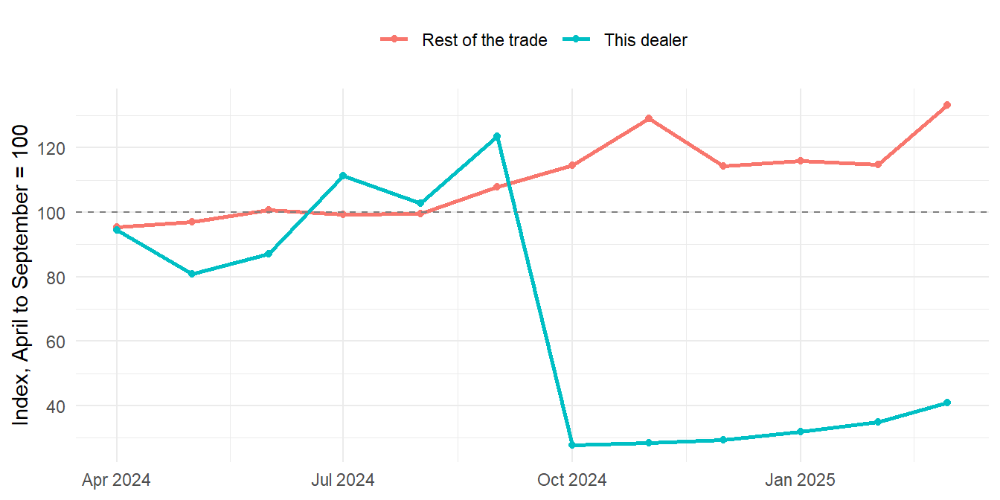
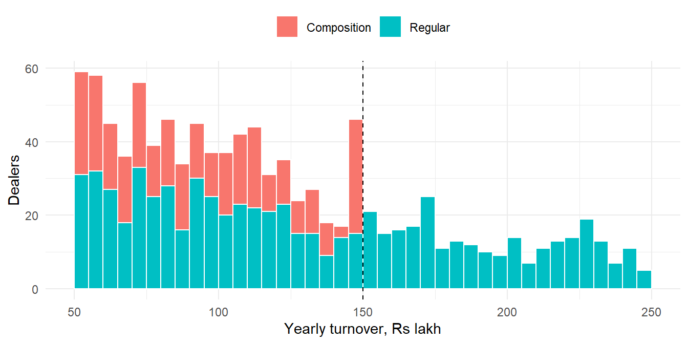

8 Revenue and Tax
A State taxes the supply of goods and services. About two thousand dealers in eight districts file a return every month. Each return declares the dealer’s sales, the tax due on them, and the credit claimed for tax already paid on purchases. The dealer pays the rest. Nobody checks most returns in detail. So a dealer may declare less than was sold, charge an old lower rate, or claim a refund that is not due. A dealer may stop filing and carry on trading. A shell firm may exist only to pass on credit.
Most chapters of this part look for money wrongly spent. Revenue audit looks for money not collected. It asks two questions. Was all the tax that should have been assessed actually assessed and collected? Were exemptions, concessions and refunds allowed correctly? The loss is harder to see, because nothing was paid out. It shows only when the return is read against another record, such as the movement of goods, the buyer’s own return or the guideline value of a property.
Earlier chapters already hold several revenue tests, such as the credit reconciliation of Section 2.5, circular trading in Section 55.4, and refund models in Chapter 41. This chapter runs them together for one department, in a few lines each, and adds what the book lacks. These are tests of registration and filing, of tax declared against third-party data, and of rates, thresholds and refunds. Others look for shell dealers, check stamp duty on property, and age the demands not collected. It then combines the flags for each dealer, and follows two cases to the end.
A flag is not a finding. Many flags in tax data have an innocent cause, such as a seasonal trade, an export or a genuine closure. The aim is to find the few that need a question.
This chapter uses tidyverse, stringdist and igraph. If they are missing, install them with the command below. Section C.1 lists the packages of every part.
install.packages(c("tidyverse", "stringdist", "igraph"))Prerequisites
8.1 Where revenue leaks
A tax on supplies rests on a few records. Each can be read against the others.
| Record | What it holds | What can go wrong |
|---|---|---|
| Registration master | Who is registered, where, in which trade and scheme, with bank account and mobile | Shell firms, cancelled dealers still trading, concessions to those not eligible |
| Monthly returns | Turnover, taxable value by rate, output tax, input tax credit and tax paid | Turnover hidden, nil returns, returns not filed or filed late |
| Movement records | Goods moved by each dealer, in the style of e-way bills | Goods moving with no sale declared |
| Buyers’ reports | Purchases each buyer reports from each supplier | A supplier declaring less than its buyers say they bought |
| Rate master and invoices | The rate for each commodity code from each date, and the rate charged | Tax charged at an old or wrong rate |
| Refunds | Claims, sanction dates, amounts and the account credited | Refunds to new or linked dealers, sanctioned too fast, larger than any tax paid |
| Demands and collections | Tax assessed after scrutiny, and what was recovered | Demands left uncollected until recovery is barred |
| Property registrations | Value declared, guideline value and stamp duty paid | Property undervalued, misclassified or registered twice |
The controls are simple. Every registered dealer should file every return. What a dealer declares should agree with what third parties record. Tax should be charged at the rate in force on the date of supply. A concession or a refund should go only to those entitled to it. A demand should be collected before the time to recover it runs out.
8.2 Our data, a year of a State tax on goods and services
Our auditee is the tax department of an imaginary State, with eight districts. We have its records for 2024-25. All names and numbers are made up. There are twelve tables.
-
dealersis the registration master. It holds the dealer ID, name, a PAN-like code, trade, district, address, dates of registration and cancellation, scheme, bank account and mobile. -
returnshas one row per dealer per month filed. It holds turnover, exports, exempt sales, taxable value at 5%, 12% and 18%, output tax, input tax credit (ITC) claimed, tax paid and the filing date. -
movementsummarises the movement records of goods sent by each dealer each month. -
buyer_reportsholds the purchases each buyer reported from each supplier each month. -
treasuryholds the tax credited to the State’s account, by return month. -
rate_mastergives the rate for each commodity code from each date.supply_linesholds the invoices of forty dealers of building material, with the rate charged. -
refundsholds the refund claims, with dates, amounts and the bank account credited. -
demandsholds the tax demands raised after scrutiny, back to 2017, andcollectionsthe amounts recovered. -
deedsholds about three thousand property documents registered in one sub-registrar office, andguidelinethe guideline rate per square metre for each locality and type of property.
The tax follows a few example norms. Most goods are taxed at 5%, 12% or 18%. A retailer with a yearly turnover up to ₹1.5 crore may choose a composition scheme, paying a flat 1% of turnover with no credit. In our example the scheme is closed to dealers of iron and steel and of electronics. A return is due by the 20th of the next month. The rate on ceramic tiles rose from 12% to 18% on 1 October 2024. Stamp duty is 6% of the declared value or the guideline value, whichever is higher. A demand must be recovered within five years of being raised. These are illustrative rules for this example only. In real work, apply the actual law, rates and time limits of your own jurisdiction.
Most of the data is routine. Fertiliser sales rise and fall with the sowing seasons, and some small fertiliser dealers sell nothing in winter. Some dealers closed during the year and had their registrations cancelled. A few dealers are dormant and file nil returns. Some exporters receive large refunds of credit, as the law intends. Some property documents valued below the guideline value were referred for valuation, as the rules allow. Into this, these cases have been planted.
- Nil returns while goods move. A steel wholesaler files nil returns from September while its goods keep moving.
- Turnover hidden. An electronics wholesaler declares about a third of its sales, in round lakh, while its buyers report far more.
- A sharp fall. A cement dealer’s tax falls sharply from October while the trade grows.
- An old rate. A building material dealer keeps charging 12% on tiles after the rate rose to 18%.
- Bunching. Two dozen retailers keep their turnover just under the composition limit, and three dealers in excluded trades use the scheme.
- Refunds to new linked dealers. Three “exporters” registered in November share a bank account and a mobile, and receive refunds within days.
- A refund above all tax paid. A dealer registered in August is refunded more than all the tax it ever paid.
- A ring of shell dealers. Four dealers registered in June trade goods round in a circle, and stop filing after January.
- Stamp duty. Documents in one locality are valued far below the guideline value. One property is sold twice by the same seller. Shops are registered as houses.
- Old demands. Large demands of 2020-21 are uncollected and close to the time limit.
Let us build the data.
Code to create the tax department’s data
set.seed(2526)
fy_start <- as.Date("2024-04-01")
fy_end <- as.Date("2025-03-31")
fy_months <- seq(fy_start, by = "month", length.out = 12)
month_end <- function(m) ceiling_date(m, "month") - 1
districts <- c("Dhanpur", "Kesarganj", "Chandgarh", "Sonpur", "Rampura", "Lakhanpur", "Bhimgarh", "Navgaon")
trades <- tribble(
~trade, ~main_rate, ~moves, ~share, ~exempt,
"Iron and steel", 18, TRUE, 0.11, 0,
"Cement", 18, TRUE, 0.08, 0,
"Building material", 18, TRUE, 0.10, 0,
"Textiles", 5, TRUE, 0.12, 0,
"Electronics", 18, TRUE, 0.10, 0,
"Grocery", 5, TRUE, 0.17, 0.35,
"Fertiliser", 5, TRUE, 0.07, 0,
"Pharmaceuticals", 12, TRUE, 0.08, 0,
"Restaurants", 5, FALSE, 0.11, 0,
"Scrap and metals", 18, TRUE, 0.06, 0)
season_flat <- c(0.95, 0.95, 0.95, 0.95, 0.95, 1.00, 1.08, 1.10, 1.00, 0.97, 0.95, 1.15)
season_fert <- c(0.55, 0.85, 1.70, 1.75, 1.05, 0.75, 1.55, 1.45, 0.85, 0.60, 0.50, 0.50)
# ---- Names and identifiers ----
pre <- c("Shree", "Jai", "New", "Maa", "Om", "Sai", "Shiv", "Ganpati", "Balaji", "Laxmi", "Krishna",
"Durga", "Gayatri", "Vinayak", "Radhe", "Bharat", "Navyug", "Pragati", "Surya", "Kamdhenu",
"Annapurna", "Hanuman", "Mahavir", "Ambika", "Shubham", "Ashirwad", "Gurukripa", "Sagar",
"Tirupati", "Vaibhav", "Kailash", "Uday", "Saraswati", "Rajdhani", "Prakash", "Moti")
suffix <- list(
"Iron and steel" = c("Steels", "Iron Traders", "Steel Corporation", "Iron Stores"),
"Cement" = c("Cement Agency", "Cement Depot", "Cement Traders"),
"Building material" = c("Tiles and Sanitary", "Building Materials", "Hardware Stores", "Ceramics"),
"Textiles" = c("Textiles", "Cloth Stores", "Fabrics", "Saree Centre"),
"Electronics" = c("Electronics", "Electricals", "Digital World", "Mobile Point"),
"Grocery" = c("Kirana Stores", "Provision Stores", "Traders", "General Stores"),
"Fertiliser" = c("Krishi Kendra", "Fertilisers", "Khad Bhandar", "Agro Agency"),
"Pharmaceuticals" = c("Medical Agency", "Pharma", "Medicos", "Drug House"),
"Restaurants" = c("Restaurant", "Bhojnalaya", "Dhaba", "Sweets and Restaurant"),
"Scrap and metals" = c("Metals", "Scrap Traders", "Alloys", "Metal Udyog"))
streets <- c("Station Road", "Sadar Bazaar", "Gandhi Chowk", "Mandi Road", "Civil Lines", "Industrial Area",
"Transport Nagar", "Main Market", "Subhash Marg", "Tilak Path", "Old City", "Bus Stand Road",
"Nehru Market", "Ring Road", "Kachehri Road", "Ganj Bazaar", "Hospital Road", "Railway Colony")
make_pan <- function(n) paste0(replicate(n, paste(sample(LETTERS, 3, TRUE), collapse = "")),
sample(c("F", "P"), n, TRUE), sample(LETTERS, n, TRUE),
sprintf("%04d", sample(1:9999, n, TRUE)), sample(LETTERS, n, TRUE))
make_acct <- function(n) sprintf("%012.0f", runif(n, 1e11, 9.99e11))
make_mobile <- function(n) paste0(sample(6:9, n, TRUE), sprintf("%09.0f", runif(n, 1e8, 9.99e8)))
pick_one <- function(x, n = 1) x[sample.int(length(x), n)]
# ---- Registration master ----
nd <- 1990
d <- tibble(trade = sample(trades$trade, nd, TRUE, prob = trades$share),
district = sample(districts, nd, TRUE)) |>
mutate(tier = if_else(trade == "Restaurants", "Retailer",
sample(c("Manufacturer", "Wholesaler", "Retailer"), nd, TRUE, prob = c(0.07, 0.26, 0.67))),
annual_lakh = case_when(tier == "Manufacturer" ~ rlnorm(nd, log(1400), 0.8),
tier == "Wholesaler" ~ rlnorm(nd, log(380), 0.7),
TRUE ~ rlnorm(nd, log(85), 0.75)),
reg_date = fy_start - sample(60:4200, nd, TRUE),
cancel_date = as.Date(NA),
exporter = FALSE)
new_reg <- sample(nd, 110)
d$reg_date[new_reg] <- fy_start + sample(5:320, 110, TRUE)
# Genuine closures, cancelled during the year
closed <- sample(setdiff(seq_len(nd), new_reg), 24)
d$cancel_date[closed] <- fy_start + sample(40:300, 24, TRUE)
# Genuine exporters, and one registered in May 2024
exp_i <- pick_one(which(d$tier != "Retailer" & d$trade %in% c("Textiles", "Pharmaceuticals", "Electronics") &
!seq_len(nd) %in% c(new_reg, closed)), 24)
d$exporter[exp_i] <- TRUE
new_exp <- pick_one(which(d$tier == "Wholesaler" & d$trade == "Textiles" & !d$exporter &
!seq_len(nd) %in% c(new_reg, closed)))
d$exporter[new_exp] <- TRUE
d$reg_date[new_exp] <- as.Date("2024-05-14")
d$annual_lakh[new_exp] <- 600
# Composition scheme, example norm: retailers up to Rs 1.5 crore, not open to two trades
excluded_trades <- c("Iron and steel", "Electronics")
d <- d |>
mutate(scheme = if_else(tier == "Retailer" & annual_lakh < 150 & !trade %in% excluded_trades &
runif(nd) < 0.55, "Composition", "Regular"))
used <- c(new_reg, closed, exp_i, new_exp)
old <- d$reg_date < fy_start & is.na(d$cancel_date) & !d$exporter
pick <- function(cond, n = 1) {
i <- pick_one(setdiff(which(cond), used), n)
used <<- c(used, i)
i
}
# Planted. Twenty-four retailers keep their turnover just under the composition limit
bunch_i <- pick(old & d$tier == "Retailer" & d$scheme == "Regular" &
!d$trade %in% c(excluded_trades, "Restaurants") & d$annual_lakh > 160 & d$annual_lakh < 300, 24)
d$scheme[bunch_i] <- "Composition"
d$annual_lakh[bunch_i] <- runif(24, 145.5, 149.8)
# Planted. Composition taken in trades not eligible for it
inelig_i <- pick(old & d$tier == "Retailer" & d$trade %in% excluded_trades & d$annual_lakh < 110, 3)
d$scheme[inelig_i] <- "Composition"
reg_old <- old & d$scheme == "Regular"
# Planted. Nil returns from September while goods keep moving
p_nil <- pick(reg_old & d$tier == "Wholesaler" & d$trade == "Iron and steel")
# Planted. Declares about a third of the turnover, in round lakh
p_hide <- pick(reg_old & d$tier == "Wholesaler" & d$trade == "Electronics" & d$district == "Dhanpur")
d$annual_lakh[p_hide] <- 720
# Planted. Tax falls sharply from October while the trade grows
p_drop <- pick(reg_old & d$tier == "Wholesaler" & d$trade == "Cement" & d$district == "Kesarganj")
d$annual_lakh[p_drop] <- 560
# Planted. Keeps charging the old rate on tiles after the rise
p_rate <- pick(reg_old & d$tier == "Wholesaler" & d$trade == "Building material")
d$annual_lakh[p_rate] <- 450
# Planted. Twelve dealers stop filing, three of them still moving goods
stop_i <- pick(reg_old & d$tier != "Manufacturer" & d$trade != "Restaurants", 12)
stop_after <- sample(fy_months[4:8], 12, TRUE)
stop_moving <- stop_i[1:3]
# Planted. Two cancelled dealers keep moving goods
canc_trade <- pick_one(closed[d$cancel_date[closed] < as.Date("2024-11-01") & d$trade[closed] != "Restaurants" &
d$tier[closed] != "Retailer"], 2)
if (length(canc_trade) < 2) canc_trade <- pick_one(closed[d$cancel_date[closed] < as.Date("2024-12-01") &
d$trade[closed] != "Restaurants"], 2)
d$tier[canc_trade] <- "Wholesaler"; d$scheme[canc_trade] <- "Regular"
d$annual_lakh[canc_trade] <- c(260, 310)
# Chronic late filers, and dormant dealers who file nil returns (innocent)
late_i <- pick(old, 18)
dormant_i <- pick(old & d$tier == "Retailer" & d$trade != "Restaurants", 12)
# Planted. A dealer registered in August 2024 who gets a refund larger than all tax paid
p_bigref <- pick(reg_old & d$tier == "Wholesaler" & d$trade %in% c("Iron and steel", "Building material"))
d$reg_date[p_bigref] <- as.Date("2024-08-12")
d$annual_lakh[p_bigref] <- 180
# Family firms sharing an address and a mobile (innocent)
fam_i <- pick(old, 6)
d <- d |>
mutate(dealer_name = paste(sample(pre, nd, TRUE), map_chr(trade, \(t) sample(suffix[[t]], 1)))) |>
mutate(combo = sample(length(streets) * 400, n()), .by = district) |>
mutate(address = paste0((combo - 1) %% 400 + 1, ", ", streets[(combo - 1) %/% 400 + 1], ", ", district)) |>
select(-combo)
fam_a <- fam_i[c(1, 3, 5)]; fam_b <- fam_i[c(2, 4, 6)]
d$district[fam_b] <- d$district[fam_a]; d$address[fam_b] <- d$address[fam_a]
d <- d |> mutate(pan = make_pan(nd), bank_account = make_acct(nd), mobile = make_mobile(nd))
d$mobile[fam_b] <- d$mobile[fam_a]
d$dealer_name[fam_b] <- paste(word(d$dealer_name[fam_a], 1), map_chr(d$trade[fam_b], \(t) suffix[[t]][2]))
# Planted. A ring of four shell dealers registered in June 2024, and three new "exporters"
ring <- tibble(trade = "Scrap and metals", district = "Bhimgarh", tier = "Wholesaler", annual_lakh = 0,
reg_date = as.Date(c("2024-06-04", "2024-06-07", "2024-06-13", "2024-06-21")),
cancel_date = as.Date(NA), exporter = FALSE, scheme = "Regular",
dealer_name = c("Prime Metal Traders", "Ardent Alloys", "Vardhaman Scrap Company", "Prime Metals and Alloys"),
address = c("Plot 17, Industrial Area, Bhimgarh", "Plot No. 17, Industrial Area, Bhimgarh",
"Plot 17 Industrial Area, Bhimgarh", "Plot 17-A, Industrial Aera, Bhimgarh"),
pan = make_pan(4), bank_account = make_acct(4), mobile = "9753108642")
trio <- tibble(trade = "Scrap and metals", district = c("Bhimgarh", "Navgaon", "Bhimgarh"), tier = "Wholesaler",
annual_lakh = 0, reg_date = as.Date(c("2024-11-04", "2024-11-11", "2024-11-19")),
cancel_date = as.Date(NA), exporter = TRUE, scheme = "Regular",
dealer_name = c("Kiran Exim", "Neelkamal Overseas", "Sapna International"),
address = c("22, Ring Road, Bhimgarh", "9, Tilak Path, Navgaon", "141, Ganj Bazaar, Bhimgarh"),
pan = make_pan(3), bank_account = make_acct(1), mobile = "8460217395")
d <- bind_rows(d, ring, trio)
ND <- nrow(d)
ring_k <- (nd + 1):(nd + 4)
trio_k <- (nd + 5):(nd + 7)
d$dealer_id <- sprintf("TD%05d", sample(10000:99999, ND))
d <- d |> left_join(trades, by = "trade")
# ---- True and declared monthly turnover ----
panel <- expand_grid(k = seq_len(ND), mi = 1:12) |>
mutate(month = fy_months[mi]) |>
filter(month_end(month) >= d$reg_date[k],
is.na(d$cancel_date[k]) | month <= d$cancel_date[k] | k %in% canc_trade,
!k %in% c(ring_k, trio_k)) |>
mutate(seas = if_else(d$trade[k] == "Fertiliser", season_fert[mi], season_flat[mi]),
true_value = round(d$annual_lakh[k] * 1e5 / 12 * seas * (1 + 0.01 * (mi - 6.5)) *
rlnorm(n(), 0, 0.12)))
# Off-season months with no sales for small fertiliser retailers, and dormant dealers (innocent)
panel <- panel |>
mutate(true_value = if_else(d$trade[k] == "Fertiliser" & d$scheme[k] == "Composition" & mi %in% 10:12 &
runif(n()) < 0.5, 0, true_value),
true_value = if_else(k %in% dormant_i, 0, true_value))
# Bunched dealers: declared turnover adds up to just under the limit
panel <- panel |>
mutate(true_value = if_else(k %in% bunch_i,
round(true_value / sum(true_value) * d$annual_lakh[k] * 1e5), true_value),
.by = k)
panel <- panel |>
mutate(declared = case_when(
k == p_nil & mi >= 6 ~ 0,
k == p_hide ~ round(true_value * runif(n(), 0.30, 0.38) / 1e5) * 1e5,
k == p_drop & mi >= 7 ~ round(true_value * runif(n(), 0.22, 0.30)),
TRUE ~ true_value),
filed = !(k %in% stop_i & month > stop_after[match(k, stop_i)]) &
!(k %in% canc_trade & month > d$cancel_date[k]))
# Ring and trio: invoices among themselves (value in Rs)
ring_months <- fy_months[4:10]
ring_flow <- expand_grid(mi = 4:10, j = 1:4) |>
mutate(month = fy_months[mi], seller = ring_k[j], buyer = ring_k[c(2, 3, 4, 1)][j],
value = round(1.85e7 * (1 + 0.04 * (mi - 4)) * runif(n(), 0.99, 1.01)))
trio_flow <- expand_grid(mi = 8:10, j = 1:3) |>
mutate(month = fy_months[mi], seller = ring_k[4], buyer = trio_k[j],
value = round(runif(n(), 0.7e7, 0.95e7)))
trio_flow <- trio_flow |> filter(month_end(month) >= d$reg_date[buyer])
shell_flow <- bind_rows(ring_flow, trio_flow)
ring_panel <- shell_flow |>
summarise(declared = sum(value), .by = c(seller, mi, month)) |>
transmute(k = seller, mi, month, true_value = declared, declared, filed = TRUE)
trio_panel <- trio_flow |>
summarise(bought = sum(value), .by = c(buyer, mi, month)) |>
transmute(k = buyer, mi, month, true_value = round(bought * 1.03), declared = true_value, filed = TRUE)
trio_buy <- trio_flow |> summarise(bought = sum(value), .by = c(buyer, month)) |> rename(k = buyer)
# Trio keep filing to March, exporting what they "bought"
trio_panel <- bind_rows(trio_panel,
expand_grid(k = trio_k, mi = 11:12) |>
mutate(month = fy_months[mi], true_value = 0, declared = 0, filed = TRUE))
panel <- bind_rows(panel, ring_panel, trio_panel)
# ---- Monthly returns ----
dealer_itc <- case_when(d$tier == "Manufacturer" ~ runif(ND, 0.55, 0.75),
d$tier == "Wholesaler" ~ runif(ND, 0.80, 0.92),
TRUE ~ runif(ND, 0.75, 0.90))
exp_share <- if_else(d$exporter, runif(ND, 0.6, 0.9), 0)
exp_share[trio_k] <- 1
returns <- panel |>
filter(filed) |>
mutate(comp = d$scheme[k] == "Composition",
export_value = if_else(comp, 0, round(declared * exp_share[k])),
exempt_value = if_else(comp, 0, round(declared * d$exempt[k])),
taxable = if_else(comp, 0, declared - export_value - exempt_value),
bm = d$trade[k] == "Building material",
low_share = case_when(bm & (month < as.Date("2024-10-01") | k == p_rate) ~ 0.45,
bm ~ 0.08, TRUE ~ 0),
taxable_5 = if_else(d$main_rate[k] == 5, taxable, 0),
taxable_12 = case_when(bm ~ round(taxable * low_share), d$main_rate[k] == 12 ~ taxable, TRUE ~ 0),
taxable_18 = if_else(d$main_rate[k] == 18, taxable - taxable_12, 0),
output_tax = if_else(comp, round(0.01 * declared),
round(0.05 * taxable_5 + 0.12 * taxable_12 + 0.18 * taxable_18)),
itc_claimed = case_when(comp ~ 0,
k %in% ring_k ~ round(output_tax * runif(n(), 0.97, 0.99)),
k %in% trio_k ~ 0,
d$exporter[k] ~ round(declared * 0.62 * d$main_rate[k] / 100 * rlnorm(n(), 0, 0.05)),
TRUE ~ round(output_tax * dealer_itc[k] * rlnorm(n(), 0, 0.04))),
itc_claimed = if_else(comp, 0, pmin(itc_claimed, if_else(d$exporter[k], Inf, output_tax))))
# Trio credit: tax on what they bought from the ring
returns <- returns |>
left_join(trio_buy, by = c("k", "month")) |>
mutate(itc_claimed = if_else(k %in% trio_k, round(coalesce(bought, 0) * 0.18), itc_claimed),
tax_paid = pmax(0, output_tax - itc_claimed),
due = month %m+% months(1) + 19,
filing_date = due - sample(0:12, n(), TRUE),
filing_date = if_else(runif(n()) < 0.07, due + sample(1:20, n(), TRUE), filing_date),
filing_date = if_else(k %in% late_i & runif(n()) < 0.8, due + sample(15:75, n(), TRUE), filing_date))
# ---- Movement records, summarised by dealer and month ----
move_share <- case_when(d$exporter ~ runif(ND, 0.95, 1.0),
d$tier == "Manufacturer" ~ runif(ND, 0.82, 0.95),
d$tier == "Wholesaler" ~ runif(ND, 0.72, 0.90),
TRUE ~ runif(ND, 0.05, 0.20))
movement <- panel |>
filter(d$moves[k], !k %in% c(ring_k, trio_k), true_value > 0,
!(k %in% stop_i[!stop_i %in% stop_moving] & month > stop_after[match(k, stop_i)])) |>
mutate(value_moved = round(true_value * move_share[k] * rlnorm(n(), 0, 0.06)),
consignments = pmax(1, round(value_moved / runif(n(), 1.5e5, 3.5e5)))) |>
transmute(k, month, consignments, value_moved)
# ---- Purchases reported by buyers, by supplier and month ----
active_buyers <- which(d$reg_date < fy_start & is.na(d$cancel_date) & !seq_len(ND) %in% c(ring_k, trio_k, dormant_i))
b2b_share <- case_when(d$exporter ~ (1 - exp_share) * 0.6, TRUE ~ runif(ND, 0.45, 0.70))
b2b_share[p_drop] <- 0.55
links <- tibble(s = which(d$scheme == "Regular" & d$tier != "Retailer" & d$moves &
!seq_len(ND) %in% c(ring_k, trio_k))) |>
mutate(buyers = map(s, \(x) {
nxt <- if (d$tier[x] == "Manufacturer") "Wholesaler" else "Retailer"
pool <- intersect(active_buyers, which(d$trade == d$trade[x] & d$tier == nxt & seq_len(ND) != x))
near <- intersect(pool, which(d$district == d$district[x]))
nb <- sample(3:7, 1)
b <- unique(c(pick_one(near, min(length(near), nb - 1)), pick_one(pool, 1)))
tibble(b = b, w = prop.table(rexp(length(b))))
})) |>
unnest(buyers)
# Two pairs of wholesalers that also buy from each other (innocent)
mutual_w <- pick_one(which(d$tier == "Wholesaler" & seq_len(ND) %in% active_buyers & d$scheme == "Regular" &
d$moves & !d$exporter & !seq_len(ND) %in% used), 4)
links <- bind_rows(links, tibble(s = mutual_w, b = mutual_w[c(2, 1, 4, 3)], w = 0.05))
buyer_reports <- panel |>
filter(true_value > 0, !k %in% c(ring_k, trio_k),
!(k %in% stop_i[!stop_i %in% stop_moving] & month > stop_after[match(k, stop_i)])) |>
inner_join(links, by = c("k" = "s"), relationship = "many-to-many") |>
mutate(value = round(true_value * b2b_share[k] * w * rlnorm(n(), 0, 0.10))) |>
transmute(buyer = b, supplier = k, month, value) |>
bind_rows(shell_flow |> transmute(buyer, supplier = seller, month, value))
# ---- Treasury: tax paid, by return month ----
treasury <- returns |>
summarise(tax_credited = sum(tax_paid), .by = month) |>
arrange(month)
# ---- Rate master and supply lines of building material dealers ----
rate_master <- tribble(
~commodity_code, ~description, ~rate, ~effective_from,
"B101", "Cement", 18, "2017-07-01",
"B102", "Paints", 18, "2017-07-01",
"B103", "Bricks", 5, "2017-07-01",
"B103", "Bricks", 12, "2022-04-01",
"B104", "Ceramic tiles", 12, "2017-07-01",
"B104", "Ceramic tiles", 18, "2024-10-01",
"B105", "Sanitaryware", 18, "2017-07-01") |>
mutate(effective_from = as.Date(effective_from))
bm_k <- c(pick_one(setdiff(which(reg_old & d$trade[1:nd] == "Building material" & d$tier[1:nd] != "Retailer"),
c(used)), 39), p_rate)
supply_lines <- expand_grid(k = bm_k, mi = 1:12) |>
mutate(n_inv = sample(6:14, n(), TRUE)) |>
uncount(n_inv) |>
mutate(invoice_date = fy_months[mi] + sample(0:27, n(), TRUE),
commodity_code = sample(c("B101", "B102", "B103", "B104", "B105"), n(), TRUE,
prob = c(0.15, 0.15, 0.10, 0.40, 0.20)),
taxable_value = round(rlnorm(n(), log(60000), 0.8))) |>
left_join(rate_master |> select(commodity_code, effective_from, rate),
by = join_by(commodity_code, closest(invoice_date >= effective_from))) |>
mutate(rate_applied = if_else(k == p_rate & commodity_code == "B104", 12, rate),
tax_charged = round(taxable_value * rate_applied / 100) + sample(c(-1, 0, 0, 0, 0, 1), n(), TRUE)) |>
arrange(invoice_date) |>
mutate(invoice_no = sprintf("INV/%05d", row_number())) |>
transmute(dealer_id = d$dealer_id[k], invoice_no, invoice_date, commodity_code, taxable_value,
rate_applied, tax_charged)
# ---- Refunds ----
q_end <- as.Date(c("2024-06-30", "2024-09-30", "2024-12-31"))
exp_refunds <- returns |>
filter(d$exporter[k], !k %in% trio_k) |>
mutate(q = findInterval(month, as.Date(c("2024-04-01", "2024-07-01", "2024-10-01", "2025-01-01")))) |>
filter(q <= 3) |>
summarise(amount_claimed = sum(itc_claimed - output_tax), .by = c(k, q)) |>
filter(amount_claimed > 0) |>
mutate(refund_type = "Export of goods", period = q_end[q],
claim_date = period + sample(10:40, n(), TRUE),
sanction_date = claim_date + sample(18:58, n(), TRUE),
amount_sanctioned = if_else(runif(n()) < 0.3, round(amount_claimed * runif(n(), 0.92, 0.99)),
amount_claimed))
trio_refunds <- returns |>
filter(k %in% trio_k, month >= as.Date("2024-12-01")) |>
mutate(period = if_else(month < as.Date("2025-01-01"), as.Date("2024-12-31"), as.Date("2025-01-31"))) |>
summarise(amount_claimed = sum(itc_claimed - output_tax), .by = c(k, period)) |>
filter(amount_claimed > 0) |>
mutate(refund_type = "Export of goods", claim_date = period + sample(5:12, n(), TRUE),
sanction_date = claim_date + sample(2:4, n(), TRUE), amount_sanctioned = amount_claimed)
paid_by <- returns |> summarise(paid = sum(tax_paid), .by = k)
excess_k <- pick_one(paid_by$k[paid_by$paid > 3e5 & d$scheme[paid_by$k] == "Regular" &
!paid_by$k %in% c(used, ring_k, trio_k)], 30)
excess_refunds <- tibble(k = excess_k) |>
mutate(amount_claimed = round(paid_by$paid[match(k, paid_by$k)] * runif(n(), 0.01, 0.08), -1),
refund_type = "Excess tax paid", period = sample(fy_months[1:9], n(), TRUE) %m+% months(1) - 1,
claim_date = period + sample(15:60, n(), TRUE),
sanction_date = claim_date + sample(20:58, n(), TRUE),
amount_sanctioned = amount_claimed)
big_paid <- paid_by$paid[paid_by$k == p_bigref]
big_refund <- tibble(k = p_bigref, amount_claimed = round(big_paid * 3.4, -3), refund_type = "Excess tax paid",
period = as.Date("2025-01-31"), claim_date = as.Date("2025-02-10"),
sanction_date = as.Date("2025-03-14"), amount_sanctioned = round(big_paid * 3.4, -3))
refunds <- bind_rows(exp_refunds, trio_refunds, excess_refunds, big_refund) |>
mutate(sanction_date = if_else(sanction_date > fy_end, as.Date(NA), sanction_date),
amount_sanctioned = if_else(is.na(sanction_date), NA_real_, amount_sanctioned)) |>
arrange(claim_date) |>
mutate(refund_id = sprintf("RF/%04d", row_number()),
dealer_id = d$dealer_id[k], bank_account = d$bank_account[k]) |>
select(refund_id, dealer_id, refund_type, period, claim_date, amount_claimed,
sanction_date, amount_sanctioned, bank_account)
# ---- Demands raised and collections ----
nm <- 440
dem <- tibble(k = sample(setdiff(seq_len(ND), c(ring_k, trio_k)), nm, TRUE),
raised_on = as.Date("2017-07-01") + sample(0:2810, nm, TRUE),
amount = round(rlnorm(nm, log(2.2e5), 1.0), -2),
u = runif(nm)) |>
mutate(stayed = u > 0.70 & u <= 0.78,
share = case_when(u <= 0.55 ~ 1, u <= 0.70 ~ runif(n(), 0.2, 0.8), stayed ~ 0.1, TRUE ~ 0))
# Planted. Large demands of 2020-21, nothing collected, not stayed
old_big <- tibble(k = pick_one(setdiff(seq_len(nd), used), 9),
raised_on = as.Date("2020-04-15") + sort(sample(0:280, 9)),
amount = round(runif(9, 18e5, 75e5), -2), u = 1, stayed = FALSE, share = 0)
dem <- bind_rows(dem, old_big) |>
arrange(raised_on) |>
mutate(demand_id = sprintf("DM/%04d", row_number()), dealer_id = d$dealer_id[k])
collections <- dem |>
filter(share > 0) |>
mutate(n_inst = if_else(share == 1, sample(1:3, n(), TRUE), sample(1:2, n(), TRUE))) |>
uncount(n_inst, .id = "inst") |>
mutate(paid_on = pmin(raised_on + inst * sample(20:200, n(), TRUE), as.Date("2025-03-28")),
amount_paid = round(amount * share / ave(inst, demand_id, FUN = length))) |>
select(demand_id, paid_on, amount_paid) |>
arrange(paid_on)
demands <- dem |> select(demand_id, dealer_id, raised_on, amount, stayed)
# ---- Property registrations and the guideline rates ----
localities <- c("Shivpuri Extension", "Laxmi Vihar", "Station Area", "Ram Bagh", "Nehru Colony", "Moti Talab",
"Indira Nagar", "Sadar Bazaar", "Kailash Puram", "Patel Marg", "Ganesh Ganj", "Sun Valley")
guideline <- tibble(locality = localities,
Residential = c(24000, 18000, 21000, 15000, 12000, 9500, 16000, 26000, 14000, 30000, 11000, 19000)) |>
mutate(Commercial = round(Residential * 1.6, -2)) |>
pivot_longer(c(Residential, Commercial), names_to = "property_type", values_to = "rate_per_sqm")
nde <- 3000
first <- c(c("Ramesh", "Suresh", "Mahesh", "Dinesh", "Rajendra", "Mukesh", "Anil", "Sunil", "Vijay", "Sanjay",
"Manoj", "Pramod", "Ashok", "Deepak", "Rahul", "Amit", "Gopal", "Harish", "Mohan", "Kailash"),
c("Sunita", "Anita", "Kavita", "Geeta", "Seema", "Rekha", "Asha", "Meena", "Neha", "Pooja",
"Priya", "Kiran", "Manju", "Radha", "Kusum", "Saroj", "Nirmala", "Archana", "Jyoti", "Rashmi"))
last <- c("Sharma", "Verma", "Gupta", "Yadav", "Singh", "Patel", "Tiwari", "Mishra", "Joshi", "Saxena",
"Jain", "Agrawal", "Sahu", "Rajput", "Thakur", "Soni", "Choudhary", "Bhatt", "Nayak", "Malviya")
person <- function(n) paste(sample(first, n, TRUE), sample(last, n, TRUE))
deeds <- tibble(locality = sample(localities, nde, TRUE),
property_type = sample(c("Residential", "Commercial"), nde, TRUE, prob = c(0.8, 0.2)),
reg_date = fy_start + sample(0:364, nde, TRUE)) |>
mutate(area_sqm = if_else(property_type == "Residential", round(runif(n(), 60, 300)), round(runif(n(), 12, 120))),
plot = sample(1:5000, n())) |>
left_join(guideline, by = c("locality", "property_type")) |>
mutate(gv = area_sqm * rate_per_sqm,
declared_value = round(gv * if_else(runif(n()) < 0.15, 1, runif(n(), 1.0, 1.45)), -3),
declared_value = pmax(declared_value, gv),
referred = "No",
seller = person(n()), buyer = person(n()),
description = if_else(property_type == "Residential",
paste0(sample(c("House No. ", "Flat ", "Plot No. "), n(), TRUE), plot %% 300 + 1, ", ", locality),
paste0(sample(c("Shop No. ", "Showroom ", "Godown No. ", "Office "), n(), TRUE),
plot %% 90 + 1, ", ", locality)))
# Innocent: documents below the guideline value that were referred for valuation
ref_i <- sample(which(deeds$locality != "Shivpuri Extension"), 11)
deeds$declared_value[ref_i] <- round(deeds$gv[ref_i] * runif(11, 0.72, 0.93), -3)
deeds$referred[ref_i] <- "Yes"
# Innocent: houses near a shopping complex
near_i <- sample(which(deeds$property_type == "Residential" & !seq_len(nde) %in% ref_i), 3)
deeds$description[near_i] <- paste0("House No. ", deeds$plot[near_i] %% 300 + 1, ", behind shopping complex, ",
deeds$locality[near_i])
# Planted. Shivpuri Extension documents far below the guideline value, not referred
low_i <- sample(which(deeds$locality == "Shivpuri Extension" & deeds$property_type == "Residential" &
deeds$reg_date >= as.Date("2024-09-01") & deeds$reg_date <= as.Date("2024-12-31")), 14)
deeds$declared_value[low_i] <- round(deeds$gv[low_i] * runif(14, 0.45, 0.65), -3)
# Planted. Shops registered as residential property
shop_i <- sample(which(deeds$property_type == "Commercial" & !seq_len(nde) %in% c(ref_i, low_i)), 4)
deeds$property_type[shop_i] <- "Residential"
deeds$rate_per_sqm[shop_i] <- guideline$rate_per_sqm[match(paste(deeds$locality[shop_i], "Residential"),
paste(guideline$locality, guideline$property_type))]
deeds$declared_value[shop_i] <- round(deeds$area_sqm[shop_i] * deeds$rate_per_sqm[shop_i] * runif(4, 1.0, 1.1), -3)
deeds <- deeds |> mutate(property_id = paste0(str_sub(str_remove_all(locality, "[a-z ]"), 1, 2), "/", plot))
# Genuine resales in the year: the buyer sells on
resale_i <- sample(which(deeds$reg_date < as.Date("2024-10-01") & !seq_len(nde) %in% c(ref_i, low_i, shop_i)), 5)
resales <- deeds[resale_i, ] |>
mutate(seller = buyer, buyer = person(n()), reg_date = reg_date + sample(90:170, n(), TRUE),
declared_value = round(declared_value * runif(n(), 1.05, 1.2), -3))
# Planted. The same property sold by the same seller to two buyers
twice_i <- sample(which(deeds$reg_date < as.Date("2024-12-01") & deeds$property_type == "Residential" &
!seq_len(nde) %in% c(ref_i, low_i, shop_i, resale_i)), 1)
twice <- deeds[twice_i, ] |>
mutate(buyer = person(1), reg_date = reg_date + 64)
deeds <- bind_rows(deeds, resales, twice) |>
mutate(stamp_duty_paid = round(0.06 * pmax(declared_value, area_sqm * rate_per_sqm) / 10) * 10)
deeds$stamp_duty_paid[low_i] <- round(0.06 * deeds$declared_value[low_i])
deeds$stamp_duty_paid[ref_i] <- round(0.06 * deeds$declared_value[ref_i])
deeds <- deeds |>
arrange(reg_date) |>
mutate(doc_no = sprintf("%d/2024-25", row_number())) |>
select(doc_no, reg_date, locality, property_id, property_type, description, area_sqm,
declared_value, stamp_duty_paid, referred, seller, buyer)
# ---- Final tables, keyed by dealer_id ----
dealers <- d |>
select(dealer_id, dealer_name, pan, trade, district, address, reg_date, cancel_date, scheme,
bank_account, mobile) |>
arrange(dealer_id)
returns <- returns |>
transmute(dealer_id = d$dealer_id[k], month, turnover = declared, export_value, exempt_value,
taxable_5, taxable_12, taxable_18, output_tax, itc_claimed, tax_paid, filing_date) |>
arrange(month, dealer_id)
movement <- movement |>
transmute(dealer_id = d$dealer_id[k], month, consignments, value_moved) |>
arrange(month, dealer_id)
buyer_reports <- buyer_reports |>
summarise(value = sum(value), .by = c(buyer, supplier, month)) |>
transmute(buyer_id = d$dealer_id[buyer], supplier_id = d$dealer_id[supplier], month, value) |>
arrange(month, supplier_id)
rm(list = setdiff(ls(), c("dealers", "returns", "movement", "buyer_reports", "treasury", "rate_master",
"supply_lines", "refunds", "demands", "collections", "guideline", "deeds")))Let us look at the main tables.
glimpse(dealers)Rows: 1,997
Columns: 11
$ dealer_id <chr> "TD10075", "TD10081", "TD10085", "TD10162", "TD10172", "T…
$ dealer_name <chr> "Pragati Steels", "Saraswati Metals", "Durga Digital Worl…
$ pan <chr> "CRHFV1928S", "YOEPO7337Q", "SYZPD3081S", "JWBFF5988O", "…
$ trade <chr> "Iron and steel", "Scrap and metals", "Electronics", "Gro…
$ district <chr> "Chandgarh", "Bhimgarh", "Kesarganj", "Dhanpur", "Navgaon…
$ address <chr> "61, Ring Road, Chandgarh", "283, Old City, Bhimgarh", "5…
$ reg_date <date> 2016-09-09, 2023-08-09, 2017-05-20, 2015-04-27, 2016-04-…
$ cancel_date <date> NA, NA, NA, NA, NA, NA, NA, NA, NA, NA, NA, NA, NA, NA, …
$ scheme <chr> "Regular", "Composition", "Regular", "Regular", "Regular"…
$ bank_account <chr> "949887292455", "285358628357", "433335657261", "72053879…
$ mobile <chr> "7780011295", "7342439331", "6280188888", "7135614019", "…glimpse(returns)Rows: 23,185
Columns: 12
$ dealer_id <chr> "TD10075", "TD10081", "TD10085", "TD10162", "TD10172", "T…
$ month <date> 2024-04-01, 2024-04-01, 2024-04-01, 2024-04-01, 2024-04-…
$ turnover <dbl> 8046382, 625686, 847958, 6599490, 1164343, 651849, 159259…
$ export_value <dbl> 0, 0, 0, 0, 0, 0, 0, 0, 0, 0, 0, 0, 0, 0, 0, 0, 0, 0, 0, …
$ exempt_value <dbl> 0, 0, 0, 2309822, 407520, 0, 0, 0, 0, 0, 0, 0, 0, 0, 0, 0…
$ taxable_5 <dbl> 0, 0, 0, 4289668, 756823, 0, 159259, 0, 0, 0, 0, 0, 0, 0,…
$ taxable_12 <dbl> 0, 0, 0, 0, 0, 0, 0, 0, 0, 0, 0, 0, 3189249, 0, 0, 0, 0, …
$ taxable_18 <dbl> 8046382, 0, 847958, 0, 0, 651849, 0, 354539, 0, 2831847, …
$ output_tax <dbl> 1448349, 6257, 152632, 214483, 37841, 117333, 7963, 63817…
$ itc_claimed <dbl> 1070433, 0, 122672, 169846, 28789, 95373, 7514, 49319, 0,…
$ tax_paid <dbl> 377916, 6257, 29960, 44637, 9052, 21960, 449, 14498, 8960…
$ filing_date <date> 2024-05-20, 2024-05-15, 2024-05-14, 2024-05-20, 2024-05-…glimpse(movement)Rows: 20,565
Columns: 4
$ dealer_id <chr> "TD10075", "TD10081", "TD10085", "TD10162", "TD10172", "T…
$ month <date> 2024-04-01, 2024-04-01, 2024-04-01, 2024-04-01, 2024-04-…
$ consignments <dbl> 36, 1, 1, 16, 1, 1, 1, 1, 2, 1, 1, 19, 1, 11, 1, 9, 10, 1…
$ value_moved <dbl> 7930054, 44334, 58737, 5625364, 91033, 46402, 43376, 8298…glimpse(buyer_reports)Rows: 32,597
Columns: 4
$ buyer_id <chr> "TD99903", "TD83837", "TD75384", "TD43222", "TD33956", "TD…
$ supplier_id <chr> "TD10075", "TD10075", "TD10075", "TD10075", "TD10162", "TD…
$ month <date> 2024-04-01, 2024-04-01, 2024-04-01, 2024-04-01, 2024-04-0…
$ value <dbl> 678108, 423367, 1778751, 997508, 7743, 1329460, 10332, 804…One key links nearly everything. dealer_id joins the master to the returns, movement records, invoices, refunds and demands. In buyer_reports it appears twice, as buyer_id and supplier_id. The property documents stand apart, linked to the guideline rates by locality and type of property.
Ask for the whole year, in raw form. That means the registration master with its history of amendments and cancellations, all returns with filing dates, and the movement records summarised by dealer and month. Ask also for the purchases reported by buyers, the rate master with effective dates, and invoice data where it exists. The refund register should show sanction dates and bank accounts. The demand and collection register should go back to the oldest open demand. From the registration side, ask for the document register and the guideline rates for the same period. Ask the treasury or bank for monthly receipts. Note who ran each extract and when.
8.3 First, is the data complete?
A test on incomplete data proves nothing. Chapter 2 reconciled records item by item. Here a quicker check is enough. The dealer key must be unique, and every return must belong to a registered dealer.
anyDuplicated() returns 0 when nothing is repeated, and anti_join() finds no stray returns. Next, the tax paid in the returns should equal what reached the treasury, month by month.
# A tibble: 12 × 4
month tax_paid tax_credited difference
<date> <dbl> <dbl> <dbl>
1 2024-04-01 108360663 108360663 0
2 2024-05-01 109566968 109566968 0
3 2024-06-01 116656345 116656345 0
4 2024-07-01 117738747 117738747 0
5 2024-08-01 119436096 119436096 0
6 2024-09-01 122604450 122604450 0
7 2024-10-01 139423266 139423266 0
8 2024-11-01 146872912 146872912 0
9 2024-12-01 139289044 139289044 0
10 2025-01-01 134279107 134279107 0
11 2025-02-01 132737742 132737742 0
12 2025-03-01 159717970 159717970 0Every month agrees. The year’s returns declare output tax of ₹647.53 crore. Of this, ₹154.67 crore was paid in cash and the rest was set off by credit. In real work, a difference here is the first thing to settle, and a challan-by-challan match is the tool, as in Section 2.6.
8.4 Registration and filing
A dealer who files nothing pays nothing. So the first tests ask who should have filed and did not.
8.4.1 Dealers who stop filing
Every dealer should file a return for each month from registration until cancellation. Let us build the list of returns expected and take away those received. cross_join() pairs every dealer with every month, and filter() keeps the months in which the dealer was registered.
fy_months <- seq(as.Date("2024-04-01"), by = "month", length.out = 12)
expected <- dealers |>
mutate(first = floor_date(pmax(reg_date, as.Date("2024-04-01")), "month"),
last = floor_date(coalesce(cancel_date, as.Date("2025-03-31")), "month")) |>
cross_join(tibble(month = fy_months)) |>
filter(month >= first, month <= last) |>
select(dealer_id, month)
missing <- expected |>
anti_join(returns, by = c("dealer_id", "month"))
c(expected = nrow(expected), received = nrow(returns), missing = nrow(missing))expected received missing
23277 23185 92 92 returns are missing, from 16 dealers. A missing return in the middle of the year may be a slip. A dealer who stops filing for good and is not cancelled is more serious. If its goods keep moving, it is still trading.
last_filed <- returns |>
summarise(last_return = max(month), .by = dealer_id)
stopped <- dealers |>
filter(is.na(cancel_date)) |>
inner_join(last_filed, by = "dealer_id") |>
filter(last_return < as.Date("2025-03-01"))
moving_after <- movement |>
inner_join(stopped |> select(dealer_id, last_return), by = "dealer_id") |>
filter(month > last_return) |>
summarise(months_moving = n(), value_moved = sum(value_moved), .by = dealer_id)
stopped |>
left_join(moving_after, by = "dealer_id") |>
select(dealer_id, trade, district, reg_date, last_return, months_moving, value_moved) |>
arrange(desc(value_moved))# A tibble: 16 × 7
dealer_id trade district reg_date last_return months_moving value_moved
<chr> <chr> <chr> <date> <date> <int> <dbl>
1 TD89243 Electron… Rampura 2020-04-10 2024-10-01 5 25885985
2 TD77898 Iron and… Kesarga… 2021-07-24 2024-08-01 7 717938
3 TD30881 Iron and… Rampura 2018-11-23 2024-08-01 7 164861
4 TD32748 Electron… Rampura 2015-11-29 2024-07-01 NA NA
5 TD39658 Grocery Navgaon 2017-02-05 2024-09-01 NA NA
6 TD41678 Textiles Kesarga… 2022-04-02 2024-07-01 NA NA
7 TD48980 Grocery Lakhanp… 2013-12-02 2024-07-01 NA NA
8 TD52548 Scrap an… Bhimgarh 2024-06-21 2025-01-01 NA NA
9 TD66745 Fertilis… Sonpur 2015-04-23 2024-07-01 NA NA
10 TD71822 Textiles Chandga… 2022-01-29 2024-09-01 NA NA
11 TD75241 Scrap an… Bhimgarh 2024-06-04 2025-01-01 NA NA
12 TD82661 Scrap an… Bhimgarh 2024-06-13 2025-01-01 NA NA
13 TD87170 Scrap an… Bhimgarh 2024-06-07 2025-01-01 NA NA
14 TD89202 Textiles Lakhanp… 2019-07-07 2024-07-01 NA NA
15 TD91501 Building… Kesarga… 2019-03-28 2024-11-01 NA NA
16 TD97243 Iron and… Lakhanp… 2017-03-03 2024-10-01 NA NA16 dealers stopped filing before March and are still registered. 12 are old dealers who stopped between July 2024 and November 2024. Most of them moved no goods after their last return. They may have closed without asking for cancellation, which is common, and the officer should cancel them. But three kept moving goods worth ₹267.7 lakh after their last return. They are trading without paying. The other four registered only in June 2024, filed until January 2025, and stopped. A short life like this is a mark of a shell firm, and we meet them again in Section 8.9.
Each test in this chapter ends by keeping the IDs of the flagged dealers in an object whose name starts with f_. We combine them in Section 8.13.
f_stopped <- stopped$dealer_id
f_moving_after <- moving_after$dealer_id8.4.2 Nil returns while goods move
A nil return declares no sales at all. A dormant dealer, or a seasonal one out of season, may rightly file one. A dealer whose goods move in the same month may not.
# A tibble: 1 × 4
dealer_id nil_months consignments value_moved
<chr> <int> <dbl> <dbl>
1 TD99903 7 58 14386774There are 240 nil returns from 59 dealers. Nearly all of them have no movement of goods in the same month. They are dormant dealers, small fertiliser dealers in winter, and the new dealers we meet later. One dealer is different. Uday Steels, which trades in iron and steel, filed nil returns from September 2024. In those 7 months its movement records show 58 consignments worth ₹143.9 lakh.
f_nil_moving <- nil_moving$dealer_id8.4.3 Late returns
A return filed late delays the tax, and usually attracts a late fee and interest. Let us measure the delay of each return against its due date, the 20th of the next month.
# A tibble: 1 × 3
returns late pct_late
<int> <int> <dbl>
1 23185 1758 7.6[1] 19About 7.6% of returns were late, mostly by a few days. 19 dealers were late in six months or more, the worst by 75 days. A late return is a lapse rather than a loss, if the late fee and interest were paid. The auditor checks that they were, as an exercise shows.
f_late <- chronic$dealer_id8.4.4 Cancelled but still trading
A cancelled dealer should neither sell nor move goods. Movement records after the date of cancellation show trade that is outside the tax net.
# A tibble: 2 × 5
dealer_id trade cancelled_on months value_moved
<chr> <chr> <date> <int> <dbl>
1 TD35930 Grocery 2024-09-24 6 13517577
2 TD70652 Pharmaceuticals 2024-06-10 9 19457182Of 24 registrations cancelled during the year, two kept moving goods afterwards, worth ₹329.7 lakh in all. The others closed for real. Did the dealer apply for cancellation, or did the officer cancel it? Either way, these goods moved untaxed.
f_cancel_trading <- cancel_trading$dealer_id8.5 Tax declared against third-party data
A dealer writes its own return. Two other records describe the same trade, and the dealer does not control them. The movement records show goods sent. The buyers’ reports show what others say they bought from the dealer. Neither should be much larger than the turnover declared.
8.5.1 Turnover against movement records
Not every sale moves goods, and not every movement is a sale. A retailer sells over the counter, and a restaurant moves nothing. A wholesaler moves most of what it sells. So movement should be below the turnover declared, often well below. We compare the totals for the year, because a consignment sent on 31 March may be billed in April.
declared <- returns |>
summarise(declared = sum(turnover), .by = dealer_id)
move_gap <- declared |>
inner_join(movement |> summarise(moved = sum(value_moved), .by = dealer_id), by = "dealer_id") |>
mutate(ratio = round(moved / declared, 2)) |>
filter(moved > 1.1 * declared) |>
left_join(dealers |> select(dealer_id, trade), by = "dealer_id") |>
arrange(desc(moved - declared))
move_gap# A tibble: 6 × 5
dealer_id declared moved ratio trade
<chr> <dbl> <dbl> <dbl> <chr>
1 TD77664 25200000 63037323 2.5 Electronics
2 TD89243 41127300 59171057 1.44 Electronics
3 TD70652 7361921 25208902 3.42 Pharmaceuticals
4 TD33882 34654962 51166235 1.48 Cement
5 TD99903 11415602 24165941 2.12 Iron and steel
6 TD35930 13013967 25006453 1.92 Grocery Of 1,776 dealers with movement records, six moved more than 110% of what they declared. Four are already known, the nil filer and dealers who stopped filing or were cancelled while trading. Two are new. Vaibhav Electricals and Durga Cement Agency filed every return, yet moved goods worth 2.5 and 1.5 times what they declared. The margin of 10% is a choice. It allows for goods sent on approval or for repair, and should be written down.
f_move_gap <- move_gap$dealer_id8.5.2 Turnover against what buyers report
A buyer claims credit for tax on its purchases, so it reports them supplier by supplier. Added up for one supplier, they give a floor under that supplier’s sales. Sales to consumers and to buyers in other States come on top. So the buyers’ total should be below the turnover declared.
buyer_gap <- buyer_reports |>
summarise(reported_by_buyers = sum(value), buyers = n_distinct(buyer_id), .by = supplier_id) |>
left_join(declared, by = c("supplier_id" = "dealer_id")) |>
mutate(declared = coalesce(declared, 0),
ratio = round(reported_by_buyers / declared, 2)) |>
filter(reported_by_buyers > 1.1 * declared) |>
arrange(desc(reported_by_buyers - declared))
buyer_gap# A tibble: 5 × 5
supplier_id reported_by_buyers buyers declared ratio
<chr> <dbl> <int> <dbl> <dbl>
1 TD77664 45918144 6 25200000 1.82
2 TD70652 18254699 3 7361921 2.48
3 TD89243 50539401 5 41127300 1.23
4 TD99903 19117836 4 11415602 1.67
5 TD35930 16123841 7 13013967 1.24Of 579 suppliers, five sold less, by their own returns, than their buyers say they bought. Four are already known from the filing tests. The other is Vaibhav Electricals, whose six buyers report purchases of ₹459.2 lakh against ₹252 lakh declared. It was also caught by the movement test. We follow it in Section 8.14. This test works on totals. Section 2.5 matched the same two records invoice by invoice, which is the next step for any supplier flagged here.
f_buyer_gap <- buyer_gap$supplier_id8.5.3 A fall against the trend of the trade
A dealer’s tax should move with its trade. If cement sales in the State grew, a cement dealer whose tax halved needs a look. A simple view compares each dealer’s output tax in the second half of the year with the first half, and sets it beside the same ratio for the whole trade.
halves <- returns |>
inner_join(dealers |> select(dealer_id, trade), by = "dealer_id") |>
mutate(half = if_else(month < as.Date("2024-10-01"), "first", "second"))
trade_change <- halves |>
summarise(tax = sum(output_tax), .by = c(trade, half)) |>
pivot_wider(names_from = half, values_from = tax) |>
mutate(trade_change = round(second / first, 2)) |>
select(trade, trade_change)
trade_change# A tibble: 10 × 2
trade trade_change
<chr> <dbl>
1 Iron and steel 1.18
2 Scrap and metals 1.27
3 Electronics 1.15
4 Grocery 1.2
5 Restaurants 1.17
6 Cement 1.19
7 Building material 1.42
8 Textiles 1.18
9 Fertiliser 0.97
10 Pharmaceuticals 1.23drops <- halves |>
summarise(tax = sum(output_tax), months = n(), .by = c(dealer_id, trade, half)) |>
pivot_wider(names_from = half, values_from = c(tax, months)) |>
filter(months_first == 6, months_second == 6, tax_first > 0) |>
mutate(change = round(tax_second / tax_first, 2)) |>
left_join(trade_change, by = "trade") |>
filter(change < 0.5, trade_change >= 1)
drops# A tibble: 2 × 8
dealer_id trade tax_first tax_second months_first months_second change
<chr> <chr> <dbl> <dbl> <int> <int> <dbl>
1 TD33882 Cement 4717402 1520491 6 6 0.32
2 TD99903 Iron and ste… 2054807 0 6 6 0
# ℹ 1 more variable: trade_change <dbl>pivot_wider() puts the two halves side by side, as in Chapter 17. Every trade grew except fertiliser, at 0.97, whose sowing seasons fall mostly in the first half. Building material grew most, at 1.42, partly because the rate on tiles rose. Only dealers who filed all twelve returns are compared, so closures do not appear. Two dealers fall below half while their trade grew. One is the nil filer we already know. The other is Durga Cement Agency, a cement dealer whose tax fell to 32% of the first half, while the trade grew by 19%. A chart shows when.
cement_index <- halves |>
filter(trade == drop_row$trade) |>
mutate(series = if_else(dealer_id == drop_id, "This dealer", "Rest of the trade")) |>
summarise(tax = sum(output_tax), .by = c(series, month)) |>
mutate(index = 100 * tax / mean(tax[month < as.Date("2024-10-01")]), .by = series)
ggplot(cement_index, aes(month, index, colour = series)) +
geom_line(linewidth = 1) +
geom_point() +
geom_hline(yintercept = 100, linetype = "dashed", colour = "grey50") +
labs(x = NULL, y = "Index, April to September = 100", colour = NULL) +
theme_minimal() +
theme(legend.position = "top")
The rest of the trade rises gently. This dealer drops in October and stays down. The movement test caught the same dealer, which makes the case stronger. A drop like this may have an innocent reason, such as a lost contract or a branch registered separately. The dealer’s books will show which. With several years of monthly data, the forecasts of Section 49.7 and the change points of Section 50.13 do this more carefully.
f_drop <- drops$dealer_idA fall in tax may be a seasonal trade, a lost customer or a branch registered separately. A nil return may come from a dealer who really sold nothing. A large refund may be due to a genuine exporter. A missing return may mean a business that closed without telling anyone. Movement and buyers’ records have errors and timing differences of their own. So treat every flag as a question to the assessing officer, and look at the assessment file before calling anything an irregularity.
8.6 Tax at the rate in force
Rates change. An invoice must carry the rate in force for its commodity code on the date of supply. A dealer who keeps charging an old lower rate collects less tax than is due. Section 16.5 and Section 16.6 showed the tool, a rolling join with closest(). Here the rate master holds each code’s rates with the date from which each applies.
rate_master# A tibble: 7 × 4
commodity_code description rate effective_from
<chr> <chr> <dbl> <date>
1 B101 Cement 18 2017-07-01
2 B102 Paints 18 2017-07-01
3 B103 Bricks 5 2017-07-01
4 B103 Bricks 12 2022-04-01
5 B104 Ceramic tiles 12 2017-07-01
6 B104 Ceramic tiles 18 2024-10-01
7 B105 Sanitaryware 18 2017-07-01 rate_check <- supply_lines |>
left_join(rate_master |> select(commodity_code, effective_from, rate),
by = join_by(commodity_code, closest(invoice_date >= effective_from))) |>
mutate(tax_due = round(taxable_value * rate / 100),
difference = tax_due - tax_charged)
rate_check |>
count(rate_ok = rate_applied == rate, within_one_rupee = abs(difference) <= 1)# A tibble: 2 × 3
rate_ok within_one_rupee n
<lgl> <lgl> <int>
1 FALSE FALSE 24
2 TRUE TRUE 4873Nearly every invoice carries the right rate. 1,651 of them differ from our calculation by a rupee, which is rounding. Let us look at the rest.
# A tibble: 1 × 9
dealer_id commodity_code rate_applied rate invoices from to
<chr> <chr> <dbl> <dbl> <int> <date> <date>
1 TD45229 B104 12 18 24 2024-10-03 2025-03-28
# ℹ 2 more variables: taxable <dbl>, tax_short <dbl>One dealer, Om Building Materials, charged 12% on tiles in 24 invoices from 3 October 2024 to 28 March 2025. The other 39 dealers who sold tiles after 1 October all moved to 18%. On the invoices we have, the tax short-levied is ₹1.3 lakh. These invoices are only a sample of its sales. The dealer’s returns, as an exercise shows, suggest that the whole of its tile sales stayed at 12%. A rate charged above the one in force is not a revenue loss, but it overcharges the buyer, and the same join finds it with rate_applied > rate.
f_low_rate <- unique(low_rate$dealer_id)8.7 Thresholds and concessions
A concession that depends on a limit invites dealers to stay just under it. A concession open only to some invites others to claim it anyway.
8.7.1 Turnover bunched below the limit
In our example a retailer may pay 1% under the composition scheme only while its yearly turnover stays within ₹1.5 crore. If dealers keep their declared turnover just under the limit, the turnovers pile up just below it. Section 23.8 found bills kept below a sanction limit in the same way. Let us draw the yearly turnover of dealers who filed all twelve returns, between ₹50 lakh and ₹2.5 crore.
annual <- returns |>
summarise(turnover_lakh = sum(turnover) / 1e5, months = n(), .by = dealer_id) |>
inner_join(dealers |> select(dealer_id, trade, scheme), by = "dealer_id")annual |>
filter(months == 12, turnover_lakh > 50, turnover_lakh <= 250) |>
ggplot(aes(turnover_lakh, fill = scheme)) +
geom_histogram(binwidth = 5, boundary = 0, colour = "white") +
geom_vline(xintercept = 150, linetype = "dashed") +
labs(x = "Yearly turnover, Rs lakh", y = "Dealers", fill = NULL) +
theme_minimal() +
theme(legend.position = "top")
The count of dealers falls smoothly as turnover rises, with one exception. The bin from ₹145 lakh to ₹150 lakh holds 46 dealers, against 15 to 21 in the bins on either side. Of these, 31 are on the composition scheme. A pile like this is a pattern, not a list of culprits. Some dealers in that bin genuinely sell that much. But the pile says that some turnover is being held back, and the bin is where to start.
near_limit over_limit
31 0 31 composition dealers declared between ₹145 lakh and ₹150 lakh. None crossed the limit. For the dealers near the limit, the movement records and buyers’ reports, together with a visit to the shop, show whether the true turnover is higher.
f_near_limit <- near_limit$dealer_id
f_over_limit <- over_limit$dealer_id8.7.2 A concession claimed by those not eligible
In our example, dealers of iron and steel and of electronics may not use the composition scheme. A simple filter finds any who do.
# A tibble: 3 × 6
dealer_id dealer_name trade district reg_date turnover_lakh
<chr> <chr> <chr> <chr> <date> <dbl>
1 TD46287 Radhe Iron Traders Iron and ste… Bhimgarh 2023-10-02 51.5
2 TD80227 Rajdhani Electricals Electronics Chandga… 2020-08-18 111.
3 TD99420 Durga Electricals Electronics Bhimgarh 2019-10-26 57.9Three dealers pay 1% of turnover in trades where the rate is 18%. The registering officer should not have allowed the option. The loss is the regular tax less the credit they could have claimed. Assessment decides it, from the dealers’ purchases.
f_ineligible <- ineligible$dealer_id8.8 Refunds
A refund is money paid out of the tax collected. An exporter pays tax on inputs but none on exports, so credit piles up, and the law refunds it. A dealer who paid too much by mistake gets it back. Refunds are also a favourite route of fraud, because fake credit can be turned into cash. Let us see the register.
refunds |>
summarise(claims = n(), dealers = n_distinct(dealer_id),
sanctioned_lakh = round(sum(amount_sanctioned, na.rm = TRUE) / 1e5, 1),
.by = refund_type)# A tibble: 2 × 4
refund_type claims dealers sanctioned_lakh
<chr> <int> <int> <dbl>
1 Excess tax paid 31 31 32.2
2 Export of goods 81 28 813. refund_view <- refunds |>
left_join(dealers |> select(dealer_id, dealer_name, reg_date, mobile), by = "dealer_id") |>
mutate(months_registered = round(time_length(interval(reg_date, claim_date), "months"), 1),
days_to_sanction = as.numeric(sanction_date - claim_date))interval() and time_length() give the months from registration to claim, as in Chapter 18. Four tests follow.
8.8.1 Refunds to recently registered dealers
# A tibble: 9 × 7
refund_id dealer_name reg_date claim_date months_registered amount_claimed
<chr> <chr> <date> <date> <dbl> <dbl>
1 RF/0021 Uday Fabrics 2024-05-14 2024-07-23 2.3 128200
2 RF/0054 Uday Fabrics 2024-05-14 2024-10-19 5.2 177718
3 RF/0074 Neelkamal Ov… 2024-11-11 2025-01-06 1.8 1697400
4 RF/0075 Sapna Intern… 2024-11-19 2025-01-07 1.6 1297112
5 RF/0076 Kiran Exim 2024-11-04 2025-01-12 2.3 1603197
6 RF/0108 Kiran Exim 2024-11-04 2025-02-10 3.2 1383184
7 RF/0109 Neelkamal Ov… 2024-11-11 2025-02-10 3 1384338
8 RF/0110 Sapna Intern… 2024-11-19 2025-02-10 2.7 1699386
9 RF/0111 Krishna Tile… 2024-08-12 2025-02-10 5.9 1325000
# ℹ 1 more variable: days_to_sanction <dbl>Five dealers claimed a refund within six months of registering. Uday Fabrics is a textile exporter registered in May 2024. Its goods moved every month since it registered, and its claims took the usual time. Krishna Tiles and Sanitary claimed a refund of excess tax, which we meet in Section 8.8.4. The other three registered in November and claimed within weeks.
f_new_refund <- unique(new_refund$dealer_id)8.8.3 Refunds sanctioned unusually fast
A refund should be checked before it is paid. In our example it must be decided within 60 days. A sanction in two or three days leaves no time for checks.
0% 10% 50% 90% 100%
2 20 36 52 57 # A tibble: 6 × 6
refund_id dealer_name claim_date sanction_date days_to_sanction
<chr> <chr> <date> <date> <dbl>
1 RF/0074 Neelkamal Overseas 2025-01-06 2025-01-10 4
2 RF/0075 Sapna International 2025-01-07 2025-01-10 3
3 RF/0076 Kiran Exim 2025-01-12 2025-01-14 2
4 RF/0108 Kiran Exim 2025-02-10 2025-02-14 4
5 RF/0109 Neelkamal Overseas 2025-02-10 2025-02-12 2
6 RF/0110 Sapna International 2025-02-10 2025-02-13 3
# ℹ 1 more variable: amount_sanctioned <dbl>Most refunds took between 20 and 52 days, with a median of 36. Six were sanctioned within a week, all to the same three dealers. Some laws allow a quick provisional refund to exporters. If so, the file should show the provisional order and the final check that followed.
f_fast <- unique(fast$dealer_id)8.8.4 A refund larger than the tax ever paid
A refund of excess tax cannot be larger than the tax the dealer paid. An export refund is limited by the credit claimed instead. Let us compare each dealer’s refunds with its returns.
paid_total <- returns |>
summarise(tax_paid = sum(tax_paid), itc_claimed = sum(itc_claimed), .by = dealer_id)
refund_view |>
summarise(refunded = sum(amount_sanctioned, na.rm = TRUE), .by = c(dealer_id, dealer_name, reg_date, refund_type)) |>
left_join(paid_total, by = "dealer_id") |>
mutate(limit = if_else(refund_type == "Excess tax paid", tax_paid, itc_claimed)) |>
filter(refunded > limit)# A tibble: 1 × 8
dealer_id dealer_name reg_date refund_type refunded tax_paid itc_claimed
<chr> <chr> <date> <chr> <dbl> <dbl> <dbl>
1 TD60043 Krishna Tiles … 2024-08-12 Excess tax… 1325000 389764 1619564
# ℹ 1 more variable: limit <dbl>The 28 exporters all stay within their credit, though their refunds are large. One refund of excess tax does not. Krishna Tiles and Sanitary registered on 12 August 2024, so our returns hold every rupee of tax it has paid, ₹3,89,764. It was refunded ₹13,25,000 as excess tax. The sanctioning officer should have looked at the dealer’s payments first.
f_above_paid <- above$dealer_id8.9 Shell dealers and circular trading
A shell dealer exists on paper to issue invoices. Its buyers claim credit on those invoices, and no goods move. Shells are often registered in groups by one person, so they share identifiers, live briefly, and trade in a circle to build up turnover. Section 55.4 explained the full method. Here we run it compactly.
Shared identifiers. We first look for dealers who share a mobile number.
# A tibble: 13 × 6
dealer_id dealer_name district address reg_date mobile
<chr> <chr> <chr> <chr> <date> <chr>
1 TD38087 Mahavir Cloth Stores Navgaon 340, Tila… 2018-05-22 67807…
2 TD91437 Mahavir Iron Traders Navgaon 340, Tila… 2022-08-29 67807…
3 TD69212 Gurukripa Fertilisers Bhimgarh 27, Kache… 2022-01-22 68489…
4 TD96563 Gurukripa Tiles and Sanitary Bhimgarh 27, Kache… 2022-08-05 68489…
5 TD12809 Kiran Exim Bhimgarh 22, Ring … 2024-11-04 84602…
6 TD35037 Neelkamal Overseas Navgaon 9, Tilak … 2024-11-11 84602…
7 TD95701 Sapna International Bhimgarh 141, Ganj… 2024-11-19 84602…
8 TD52548 Prime Metals and Alloys Bhimgarh Plot 17-A… 2024-06-21 97531…
9 TD75241 Prime Metal Traders Bhimgarh Plot 17, … 2024-06-04 97531…
10 TD82661 Vardhaman Scrap Company Bhimgarh Plot 17 I… 2024-06-13 97531…
11 TD87170 Ardent Alloys Bhimgarh Plot No. … 2024-06-07 97531…
12 TD74516 Om Steel Corporation Lakhanpur 215, Civi… 2020-07-13 99954…
13 TD80962 Om Building Materials Lakhanpur 215, Civi… 2015-01-16 99954…Five numbers are shared. Three are each shared by two old firms at one address, with the same first word in their names. These look like family firms, which is innocent. One is the three new “exporters”. One is shared by four dealers of scrap registered in June at an address in Bhimgarh, written four ways. Addresses are rarely typed the same twice, so let us match them loosely, as in Chapter 35. We split off the house number, block on it and the district, and compare the rest with the Jaro-Winkler distance.
std_street <- function(x) {
x |>
str_to_lower() |>
str_replace_all("[[:punct:]]", " ") |>
str_squish() |>
str_remove("^(plot )?(no )?\\d+( a)?\\s+")
}
addr <- dealers |>
mutate(house_no = str_extract(address, "\\d+"), street = std_street(address)) |>
select(dealer_id, district, house_no, street)
addr_pairs <- addr |>
inner_join(addr, by = c("district", "house_no"), suffix = c("", "_2"),
relationship = "many-to-many") |>
filter(dealer_id < dealer_id_2) |>
mutate(jw = round(stringdist(street, street_2, method = "jw", p = 0.1), 3)) |>
arrange(jw)
addr_pairs |>
filter(jw < 0.1)# A tibble: 9 × 7
dealer_id district house_no street dealer_id_2 street_2 jw
<chr> <chr> <chr> <chr> <chr> <chr> <dbl>
1 TD38087 Navgaon 340 tilak path navgaon TD91437 tilak p… 0
2 TD69212 Bhimgarh 27 kachehri road bhimgarh TD96563 kachehr… 0
3 TD74516 Lakhanpur 215 civil lines lakhanpur TD80962 civil l… 0
4 TD75241 Bhimgarh 17 industrial area bhimg… TD82661 industr… 0
5 TD75241 Bhimgarh 17 industrial area bhimg… TD87170 industr… 0
6 TD82661 Bhimgarh 17 industrial area bhimg… TD87170 industr… 0
7 TD52548 Bhimgarh 17 industrial aera bhimg… TD75241 industr… 0.008
8 TD52548 Bhimgarh 17 industrial aera bhimg… TD82661 industr… 0.008
9 TD52548 Bhimgarh 17 industrial aera bhimg… TD87170 industr… 0.008Nine pairs are close. One pair differs by a spelling, ‘industrial aera bhimgarh’ and ‘industrial area bhimgarh’, at a distance of 0.008. The nearest pair outside this list is at 0.136, two different streets, so the cut-off of 0.1 sits in a clear gap. The close pairs are the family firms and the four dealers of Bhimgarh, every pair of them.
Goods going round in a circle. Genuine goods flow one way, from maker to wholesaler to retailer. Goods that come back to where they started need a reason. Let us turn the buyers’ reports into a directed graph, with an arrow from each supplier to each buyer. A strongly connected component is a group in which every dealer can reach every other along the arrows. A circle forms one, as Section 55.4 explained.
flows <- buyer_reports |>
summarise(value = sum(value), .by = c(supplier_id, buyer_id))
trade_net <- graph_from_data_frame(flows, directed = TRUE)
groups <- components(trade_net, mode = "strong")
table(groups$csize)
1 2 4
1524 2 1 Nearly every dealer is a group of one. Two pairs buy from each other, which wholesalers sometimes do when one runs short of stock. One group has four members. Let us see what flows inside it.
# A tibble: 4 × 3
supplier buyer value_crore
<chr> <chr> <dbl>
1 Prime Metals and Alloys Prime Metal Traders 14.5
2 Prime Metal Traders Ardent Alloys 14.6
3 Vardhaman Scrap Company Prime Metals and Alloys 14.5
4 Ardent Alloys Vardhaman Scrap Company 14.5# A tibble: 4 × 4
dealer_name reg_date last_return moved
<chr> <date> <date> <dbl>
1 Prime Metals and Alloys 2024-06-21 2025-01-01 NA
2 Prime Metal Traders 2024-06-04 2025-01-01 NA
3 Vardhaman Scrap Company 2024-06-13 2025-01-01 NA
4 Ardent Alloys 2024-06-07 2025-01-01 NAEach dealer sells to the next, and the last sells back to the first, about ₹14.5 crore round each link in the year. All four registered in June, filed until January 2025, and stopped. Not one consignment moved. Their returns show output tax of ₹11.79 crore, but they paid only ₹24.8 lakh in cash, the rest being credit. The ring also sold to three dealers outside it, the three new exporters. We follow the money in Section 8.15.
f_ring <- ring_ids8.10 Stamp duty on property registrations
Stamp duty is a second large revenue of a State. It is levied when a property is sold, on the value declared in the document or on the guideline value of the locality, whichever is higher. The guideline value, sometimes called the circle rate, is fixed per square metre for each locality and type of property. Let us check the documents of one sub-registrar office.
glimpse(deeds)Rows: 3,006
Columns: 12
$ doc_no <chr> "1/2024-25", "2/2024-25", "3/2024-25", "4/2024-25", "5…
$ reg_date <date> 2024-04-01, 2024-04-01, 2024-04-01, 2024-04-01, 2024-…
$ locality <chr> "Patel Marg", "Ram Bagh", "Ganesh Ganj", "Moti Talab",…
$ property_id <chr> "PM/3418", "RB/1004", "GG/2882", "MT/4009", "MT/1870",…
$ property_type <chr> "Residential", "Residential", "Residential", "Resident…
$ description <chr> "House No. 119, Patel Marg", "House No. 105, Ram Bagh"…
$ area_sqm <dbl> 73, 213, 282, 252, 152, 191, 245, 261, 88, 183, 272, 2…
$ declared_value <dbl> 2571000, 4347000, 3102000, 2498000, 1797000, 3121000, …
$ stamp_duty_paid <dbl> 154260, 260820, 186120, 149880, 107820, 187260, 413220…
$ referred <chr> "No", "No", "No", "No", "No", "No", "No", "No", "No", …
$ seller <chr> "Amit Agrawal", "Seema Patel", "Priya Verma", "Manju S…
$ buyer <chr> "Mahesh Nayak", "Sanjay Joshi", "Radha Tiwari", "Pooja…8.10.1 Documents below the guideline value
# A tibble: 9 × 5
locality referred documents declared_pct short_levy
<chr> <chr> <int> <dbl> <dbl>
1 Shivpuri Extension No 14 56 1562820
2 Sadar Bazaar Yes 3 78 147600
3 Laxmi Vihar Yes 1 73 77700
4 Station Area Yes 1 81 68760
5 Patel Marg Yes 1 81 56580
6 Sun Valley Yes 1 89 26340
7 Ganesh Ganj Yes 2 89 18060
8 Nehru Colony Yes 1 89 14100
9 Indira Nagar Yes 1 86 960011 documents below the guideline value were referred for valuation, as the rules allow. The duty on them is settled later, so the short levy here is not yet a loss. The other 14 were not referred. All are from Shivpuri Extension, registered between 8 September 2024 and 21 December 2024. They declare about 56% of the guideline value, and pay duty on that. The duty short-levied is ₹15.6 lakh. A cluster in one locality and one period points to one office practice, or one officer. Small differences of a few rupees, in 28 documents, are rounding.
f_deeds_low <- bl$doc_no8.10.2 The same property registered twice
A property may be sold twice in a year. The second seller is then the first buyer. If the same seller sells the same property twice, someone has been cheated. This is the duplicate test of Chapter 34.
# A tibble: 2 × 3
resale same_seller n
<lgl> <lgl> <int>
1 FALSE TRUE 1
2 TRUE FALSE 5Five properties were sold on by their buyers, which is normal. One, GG/2654, was sold by Rashmi Tiwari on 23 September 2024 to Manju Agrawal, and again on 26 November 2024 to Geeta Yadav. Both documents paid duty, so this is no loss of revenue. It is a fraud on a buyer, and a sign that the office does not check its own index before registering.
8.10.3 Shops registered as houses
Commercial property has a higher guideline rate. Shown as residential, it pays less duty. The description in the document often gives it away. str_detect() with word boundaries \\b finds “shop” but not “shopping”, as in Chapter 21.
shops <- deeds |>
filter(property_type == "Residential",
str_detect(description, regex("\\b(shop|showroom|godown|office)\\b", ignore_case = TRUE))) |>
left_join(guideline |> filter(property_type == "Commercial") |> select(locality, rate_per_sqm),
by = "locality") |>
mutate(duty_as_commercial = round(0.06 * pmax(declared_value, area_sqm * rate_per_sqm)),
short_levy = duty_as_commercial - stamp_duty_paid)
shops |>
select(doc_no, locality, description, area_sqm, declared_value, stamp_duty_paid, short_levy)# A tibble: 4 × 7
doc_no locality description area_sqm declared_value stamp_duty_paid short_levy
<chr> <chr> <chr> <dbl> <dbl> <dbl> <dbl>
1 1665/… Laxmi V… Office 71,… 19 355000 21300 11532
2 2113/… Sadar B… Godown No.… 30 846000 50760 24120
3 2577/… Sun Val… Office 50,… 98 2035000 122100 56652
4 2877/… Indira … Showroom 5… 108 1879000 112740 53148Four documents describe a shop, showroom, godown or office, yet are registered as residential. At the commercial rate they short-levied ₹1.5 lakh. The three houses “behind a shopping complex” rightly pass. A site visit settles each case.
f_deeds_shop <- shops$doc_no8.11 Demands and collection
When scrutiny or audit finds tax short-paid, the officer raises a demand. Revenue is collected only when the demand is recovered. An old demand is hard to collect, and after a time limit it cannot be enforced at all. Let us work out the balance of each demand and its age on 31 March 2025.
demand_status <- demands |>
left_join(collections |> summarise(collected = sum(amount_paid), .by = demand_id), by = "demand_id") |>
mutate(collected = coalesce(collected, 0),
balance = amount - collected,
age_years = time_length(interval(raised_on, as.Date("2025-03-31")), "years"),
limit_date = raised_on %m+% years(5))
demand_status |>
filter(balance > 0) |>
mutate(age = cut(age_years, c(0, 1, 2, 3, 4, 5, Inf), right = FALSE,
labels = c("Under 1 year", "1 to 2", "2 to 3", "3 to 4", "4 to 5", "Over 5"))) |>
summarise(demands = n(), balance_lakh = round(sum(balance) / 1e5, 1), stayed = sum(stayed), .by = age) |>
arrange(age)# A tibble: 6 × 4
age demands balance_lakh stayed
<fct> <int> <dbl> <int>
1 Under 1 year 26 54.1 6
2 1 to 2 25 63.2 3
3 2 to 3 24 33.6 2
4 3 to 4 33 115. 2
5 4 to 5 44 422. 6
6 Over 5 94 256. 14cut() puts each demand into an age band. Of 449 demands, 246 still have a balance, ₹9.44 crore in all. A demand stayed by an appellate authority waits for the appeal, and in our example the time limit does not run meanwhile. So we leave the stayed ones out. 80 demands of ₹2.17 crore are already more than five years old. Unless recovery action stopped the clock, they may now be beyond recovery. 38 more, of ₹4.08 crore, reach the limit during 2025-26.
# A tibble: 10 × 6
demand_id dealer_id raised_on amount collected limit_date
<chr> <chr> <date> <dbl> <dbl> <date>
1 DM/0188 TD40124 2020-06-11 6242700 0 2025-06-11
2 DM/0211 TD58711 2020-11-27 5956500 0 2025-11-27
3 DM/0176 TD30110 2020-05-05 4946700 0 2025-05-05
4 DM/0195 TD94888 2020-09-10 3893400 0 2025-09-10
5 DM/0223 TD53152 2021-01-16 3727800 0 2026-01-16
6 DM/0194 TD96318 2020-08-25 3677000 0 2025-08-25
7 DM/0193 TD61428 2020-08-16 2846800 0 2025-08-16
8 DM/0216 TD22088 2020-12-12 2415300 0 2025-12-12
9 DM/0205 TD57827 2020-10-31 1857500 0 2025-10-31
10 DM/0181 TD46772 2020-05-18 787200 0 2025-05-18Nine of them are over ₹10 lakh each and nothing has been collected, ₹3.56 crore together. They need action now. This simple ageing looks at each demand once. Survival analysis, which studies how long demands take to be recovered and which ones never are, is a later topic.
Tax returns are confidential by law in most jurisdictions. They also hold PANs, bank accounts, mobile numbers and addresses, and the property documents name private buyers and sellers. Use the data only for the audit, keep it in a protected folder, and do not put PANs, accounts or names of individuals in the report. Use dealer IDs and document numbers instead. A dealer named in a list of flags has not been found guilty of anything. Chapter 9 explains how to mask and pseudonymise identifiers, and how to match lists with another department without sharing them.
8.12 What earlier chapters add
Several tests from earlier chapters apply directly. We run each in a few lines, and the chapters cited explain them in full.
Benford’s law, Chapter 32. Turnovers of many dealers of many sizes should follow Benford’s law for first digits.
[1] 0.0093The mean absolute deviation is 0.0093, which Nigrini’s table in Chapter 32 counts as acceptable conformity. Across a whole State, Benford’s law rarely points to one dealer. It is more useful for one large dealer’s invoices.
Round numbers, Section 33.6. Real sales rarely come to an exact lakh. A dealer who declares round figures month after month is likely estimating them.
# A tibble: 1 × 3
dealer_id returns round_lakh
<chr> <int> <int>
1 TD77664 12 12One dealer, Vaibhav Electricals, declared a round lakh in 12 of its 12 returns. It is the dealer whose buyers report far more.
Duplicate refunds, Section 34.4. The same claim should not be paid twice.
No claim was repeated. A test that finds nothing is also a result, and belongs in the working papers.
Other chapters. Section 2.5 matched a dealer’s credit with its suppliers’ returns invoice by invoice, which is the next step for every dealer flagged in Section 8.5.2. Section 55.2 traced many registrations to one person through shared identifiers, at a larger scale than our mobile test. Chapter 36 links lists with no common key, for example the buyers in property documents with the partners of dealers flagged for hiding turnover. A whole State’s returns run to crores of rows, and Chapter 19 shows how to test them. Section 49.7 forecasts monthly receipts from past years, to see whether this year’s collection is believable.
f_round <- round_returns$dealer_id8.13 A risk view of each dealer
A dealer caught by one test may have a good reason. One caught by several is a better use of the auditor’s time. As in Section 3.8, the simplest way to combine flags is to count them.
dealer_flags <- list(
stopped_filing = f_stopped,
moving_after_stopping = f_moving_after,
nil_while_moving = f_nil_moving,
late_six_months = f_late,
cancelled_but_moving = f_cancel_trading,
movement_above_sales = f_move_gap,
buyers_above_sales = f_buyer_gap,
tax_fell_trade_grew = f_drop,
old_rate_charged = f_low_rate,
just_under_limit = f_near_limit,
over_limit = f_over_limit,
scheme_not_eligible = f_ineligible,
refund_when_new = f_new_refund,
refund_shared_account = f_shared_acct,
refund_within_week = f_fast,
refund_above_tax_paid = f_above_paid,
shared_mobile = f_shared_mobile,
shared_address = f_shared_address,
trading_ring = f_ring,
round_lakh_returns = f_round,
old_demand = f_old_demand
)
dealer_risk <- tibble(test = names(dealer_flags), dealer_id = dealer_flags) |>
unnest(dealer_id) |>
distinct() |>
summarise(flags = n(), tests = paste(test, collapse = ", "), .by = dealer_id) |>
left_join(dealers |> select(dealer_id, dealer_name, trade), by = "dealer_id") |>
arrange(desc(flags)) |>
select(dealer_id, dealer_name, flags, tests)
dealer_risk |>
print(n = 12)# A tibble: 198 × 4
dealer_id dealer_name flags tests
<chr> <chr> <int> <chr>
1 TD52548 Prime Metals and Alloys 4 stopped_filing, shared_mobile, share…
2 TD75241 Prime Metal Traders 4 stopped_filing, shared_mobile, share…
3 TD82661 Vardhaman Scrap Company 4 stopped_filing, shared_mobile, share…
4 TD87170 Ardent Alloys 4 stopped_filing, shared_mobile, share…
5 TD89243 Prakash Digital World 4 stopped_filing, moving_after_stoppin…
6 TD99903 Uday Steels 4 nil_while_moving, movement_above_sal…
7 TD35037 Neelkamal Overseas 4 refund_when_new, refund_shared_accou…
8 TD95701 Sapna International 4 refund_when_new, refund_shared_accou…
9 TD12809 Kiran Exim 4 refund_when_new, refund_shared_accou…
10 TD35930 Hanuman General Stores 3 cancelled_but_moving, movement_above…
11 TD70652 Ganpati Medicos 3 cancelled_but_moving, movement_above…
12 TD77664 Vaibhav Electricals 3 movement_above_sales, buyers_above_s…
# ℹ 186 more rowstibble() with a list column, followed by unnest(), turns the named list into a long table. 198 of 1,997 dealers raise at least one flag, and 173 of them only one. Most single flags are an old demand, a turnover near the limit or a run of late returns. The top of the list is different. The nine dealers with four or more flags are the four shell dealers, the three new exporters, the nil filer, and the electronics dealer who stopped filing but kept moving goods. Next, with three flags each, come the two cancelled dealers still trading, the dealer hiding turnover, and the cement dealer whose tax fell, which also has an old demand open. Some serious cases, such as the refund larger than all tax paid or the old rate on tiles, raise only one or two flags. So the count orders the work. It does not decide what to ignore.
A count treats every test as equal. A department with the results of past assessments can do better. Chapter 41 and Chapter 42 learn from past cases which flags really go with tax evaded, and so give each a weight. Chapter 43 does the same with many more features.
None of these tests proves evasion. Each says where to look. The work that follows is ordinary audit work, with assessment files, the dealer’s books, bank statements and visits. The analysis tests every dealer and every month, and so points that work at the right places.
8.14 Audit use case, a dealer hiding turnover
Let us follow Vaibhav Electricals, the electronics wholesaler whose buyers report far more than it declares. We set its three records side by side, month by month.
hide_view <- returns |>
filter(dealer_id == hide_id) |>
select(month, declared = turnover, output_tax) |>
left_join(movement |> filter(dealer_id == hide_id) |> select(month, moved = value_moved), by = "month") |>
left_join(buyer_reports |> filter(supplier_id == hide_id) |>
summarise(buyers_report = sum(value), .by = month), by = "month") |>
mutate(across(c(declared, moved, buyers_report), \(x) round(x / 1e5, 1)))
hide_view |>
print(n = 12)# A tibble: 12 × 5
month declared output_tax moved buyers_report
<date> <dbl> <dbl> <dbl> <dbl>
1 2024-04-01 22 396000 46.7 33.2
2 2024-05-01 17 306000 45.6 30.4
3 2024-06-01 24 432000 56.5 36.9
4 2024-07-01 19 342000 41.5 33
5 2024-08-01 21 378000 51.2 40.3
6 2024-09-01 23 414000 50.9 38.2
7 2024-10-01 18 324000 51.5 35.8
8 2024-11-01 22 396000 57.6 43.4
9 2024-12-01 20 360000 54.8 41.4
10 2025-01-01 21 378000 52.7 38.8
11 2025-02-01 22 396000 61.3 43.3
12 2025-03-01 23 414000 60 44.6The story fits together. In every month the declared turnover is a round lakh, between ₹17 lakh and ₹24 lakh. In the same months the dealer moved goods worth ₹41.5 lakh to ₹61.3 lakh. Its six registered buyers alone report purchases of ₹459.2 lakh for the year, against ₹252 lakh declared. Three independent records point the same way. The goods moved exceed the turnover declared by ₹378.4 lakh. If all of that was sold at 18%, the output tax on it would be about ₹68.1 lakh, before any further credit the dealer can prove. That figure is an estimate to guide the work. The assessment will fix the real one.
Why did nobody notice? The dealer filed every return on time, and paid what it declared. Every test of filing passes. Only the third-party records show the gap.
8.14.1 What the auditor does next
- Ask for the assessment records of the dealer. Was the return ever scrutinised, and were the buyers’ reports and movement records before the officer?
- Ask the officer to call for the dealer’s books, stock register and sales invoices, and to match them with the movement records consignment by consignment.
- Pick a few large buyers and match their purchase invoices with the dealer’s sales, as in Section 2.5.
- Ask for the dealer’s bank statements. Receipts far above the declared sales confirm the case.
- If the gap is confirmed, the department raises a demand for the tax, interest and penalty. Report the case, and the wider point that returns are accepted without a look at third-party data.
8.15 Audit use case, refunds to a ring of new dealers
Let us follow the three “exporters” who share a refund account. Account numbers are masked, as in Section 9.4.
# A tibble: 3 × 5
dealer_name district reg_date mobile account
<chr> <chr> <date> <chr> <chr>
1 Kiran Exim Bhimgarh 2024-11-04 8460217395 XXXXXXXX4158
2 Neelkamal Overseas Navgaon 2024-11-11 8460217395 XXXXXXXX4158
3 Sapna International Bhimgarh 2024-11-19 8460217395 XXXXXXXX4158Where did their credit come from? The buyers’ reports show who sold to them.
# A tibble: 3 × 4
supplier buyer months bought_lakh
<chr> <chr> <int> <dbl>
1 Prime Metals and Alloys Kiran Exim 3 239.
2 Prime Metals and Alloys Neelkamal Overseas 3 257
3 Prime Metals and Alloys Sapna International 3 250.returns |>
filter(dealer_id %in% trio_ids) |>
summarise(exports = sum(export_value), itc_claimed = sum(itc_claimed), .by = dealer_id) |>
left_join(movement |> summarise(moved = sum(value_moved), .by = dealer_id), by = "dealer_id") |>
left_join(refunds |> summarise(refunded = sum(amount_sanctioned, na.rm = TRUE), .by = dealer_id),
by = "dealer_id") |>
mutate(dealer = dname(dealer_id)) |>
select(dealer, exports, itc_claimed, moved, refunded)# A tibble: 3 × 5
dealer exports itc_claimed moved refunded
<chr> <dbl> <dbl> <dbl> <dbl>
1 Kiran Exim 24601582 4299305 NA 2986381
2 Neelkamal Overseas 26467524 4625392 NA 3081738
3 Sapna International 25722875 4495259 NA 2996498The pieces join up. The three registered within 15 days of each other in November. All their purchases came from Prime Metals and Alloys, one of the four shell dealers trading in a circle. They declared exports of ₹7.68 crore, yet not one consignment of theirs appears in the movement records. Their credit, built on invoices from a ring that never moved goods, came back as six refunds of ₹90.6 lakh, sanctioned in 2 to 4 days, into one bank account. Credit went round the ring, and came out as cash.
Each test alone found a piece. The refund tests found new dealers, a shared account and a quick sanction. The shell tests found shared identifiers and a circle. Only together do they show the scheme.
8.15.1 What the auditor does next
- Ask for the refund files. Who sanctioned each refund, what was checked, and why so fast? Were export documents such as shipping bills on file and verified?
- Ask for the registering officer’s file of all seven dealers. Who verified the premises and the identity of the proprietors, and when?
- Ask the bank, through the department, for the account holder and the statement of the refund account. Where did the money go next?
- Arrange a physical verification of the business premises of all seven at the addresses given, with the local officer.
- If confirmed, the department should recover the refunds, block the credit passed by the ring, and cancel the registrations. Report the case, and the control weakness of refunds sanctioned without a look at the claimant’s age, suppliers and identifiers.
8.16 A suggested workflow
- Get the full data, including movement records, buyers’ reports, the rate master, refund and demand registers, and the property documents. Record who extracted it and when.
- Check completeness. A unique key, every return linked to a dealer, and tax paid agreeing with the treasury.
- Test filing. Returns expected against received, dealers who stopped, nil returns, late returns, and cancelled dealers still trading.
- Compare declarations with third-party data. Movement records, buyers’ reports and the trend of the trade.
- Check rates, limits and concessions. The rate in force, bunching below a limit, and eligibility for a scheme.
- Test refunds. New claimants, shared accounts, fast sanctions, and refunds above the tax or credit.
- Look for shell dealers. Shared identifiers, short lives and circles of trade.
- Test stamp duty and demands. Guideline values, duplicates, property type, and the age of open demands.
- Add the tests of earlier chapters, combine the flags for each dealer, and follow up the top cases on paper and in person.
- Revenue audit looks for money not collected. The loss shows only when a return is read against another record.
- Count the returns expected against those received. A dealer who stops filing, or files nil, while goods move is still trading.
- Movement records and buyers’ reports put a floor under a dealer’s sales. Compare them over a year, to allow for timing.
- Use a rolling join to find the rate in force on each date.
- Concessions with limits invite bunching just below them. A histogram shows it.
- Refunds turn credit into cash. Look at the claimant’s age, account, suppliers and the speed of sanction.
- Many flags have innocent causes. Several flags on one dealer deserve the auditor’s time.
8.17 Where next
Reconciliation of credit with suppliers’ returns is in Section 2.5, and the rate in force in Section 16.6. Circular trading and shared identifiers are in Chapter 55. Time series and change points are in Chapter 49 and Section 50.13. Models that learn from past assessments are in Chapter 41, Chapter 42 and Chapter 43. Duplicates are in Chapter 34, string similarity in Chapter 35, and Benford’s law and Nigrini’s tests in Chapter 32 and Chapter 33. Large data is in Chapter 19, and personal data in Chapter 9. Chapter 9, next, audits a whole scheme.
8.18 Try it yourself
These exercises use the objects of this chapter. Try each before opening the solution.
-
Why compare with the trade? Repeat the test of Section 8.5.3 without the condition that the trade grew, and with a looser cut of 0.7 instead of 0.5. Which trades do the extra dealers come from, and why?
TipSolutionex_drops <- halves |> summarise(tax = sum(output_tax), months = n(), .by = c(dealer_id, trade, half)) |> pivot_wider(names_from = half, values_from = c(tax, months)) |> filter(months_first == 6, months_second == 6, tax_first > 0) |> mutate(change = tax_second / tax_first) |> filter(change < 0.7) ex_drops |> count(trade, sort = TRUE)# A tibble: 3 × 2 trade n <chr> <int> 1 Fertiliser 24 2 Cement 1 3 Iron and steel 126 dealers fall below 0.7. 24 of them sell fertiliser, whose sales fall in the second half every year. They are seasonal, not suspicious. Comparing each dealer with its own trade removes them, and leaves the two real cases.
-
Late fee due. Suppose, as an example norm, that a late return attracts a fee of ₹50 a day, up to ₹5,000 a return. Work out the fee due on all late returns, and the dealer with the most.
TipSolution[1] 1182050# A tibble: 1 × 3 dealer_id fee late_returns <chr> <dbl> <int> 1 TD89021 25600 11The fee due comes to ₹11.8 lakh. The next step is to match it with the fees actually paid, which the returns data would have to include.
-
The old rate in the returns. The returns of building material dealers show taxable value at 12% and 18%. Tiles moved to 18% from October, so the share at 12% should fall. Find the dealers whose share at 12% stayed above 30% from October.
TipSolutionex_share <- returns |> inner_join(dealers |> filter(trade == "Building material", scheme == "Regular") |> select(dealer_id), by = "dealer_id") |> filter(month >= as.Date("2024-10-01")) |> summarise(share_12 = sum(taxable_12) / sum(taxable_5 + taxable_12 + taxable_18), .by = dealer_id) |> filter(share_12 > 0.3) ex_share# A tibble: 1 × 2 dealer_id share_12 <chr> <dbl> 1 TD45229 0.450Only the dealer found from the invoices appears. Its returns confirm that all its tile sales stayed at 12%, not only the invoices we saw.
-
Stamp duty by month. For the documents below the guideline value that were not referred, show the number of documents and the duty short-levied by month of registration.
TipSolution# A tibble: 4 × 3 month documents short_levy <date> <int> <dbl> 1 2024-09-01 3 324840 2 2024-10-01 3 405720 3 2024-11-01 3 366240 4 2024-12-01 5 466020All the documents fall between September 2024 and December 2024. A burst like this points to one period in the office, and the auditor should ask who registered them.
-
Old demands by district. Take the open demands that are not stayed and are already barred or reach the limit in 2025-26. Total their balance by the district of the dealer.
TipSolution# A tibble: 8 × 3 district demands balance_lakh <chr> <int> <dbl> 1 Kesarganj 23 152. 2 Dhanpur 15 126 3 Lakhanpur 15 94.7 4 Rampura 13 81.4 5 Sonpur 15 74 6 Bhimgarh 20 67 7 Navgaon 11 23.9 8 Chandgarh 6 6.8Kesarganj holds the largest balance, ₹151.8 lakh. A table like this tells the department where to send its recovery staff first.
8.19 Summary of functions used
| Function | Package | What it does |
|---|---|---|
anyDuplicated() |
base R | Checks that the dealer key is unique |
anti_join(), semi_join()
|
dplyr | Finds returns expected but not received, and stray returns |
cross_join() |
dplyr | Pairs every dealer with every month, to list the returns expected |
inner_join(), left_join()
|
dplyr | Brings returns, movement, buyers’ reports, refunds and demands together |
join_by() with closest()
|
dplyr | Finds the rate in force on the date of each invoice |
filter(n() > 1, .by = ) |
dplyr | Finds shared mobiles, shared refund accounts and properties registered twice |
lag() |
dplyr | Compares each sale of a property with the one before |
pivot_wider(), unnest()
|
tidyr | Puts two halves of the year side by side, and turns a list of flags into a table |
str_replace_all(), str_remove(), str_extract()
|
stringr | Standardises addresses and takes out the house number |
str_detect() with regex()
|
stringr | Finds shops described in documents registered as houses |
stringdist() |
stringdist | Distance between two addresses |
graph_from_data_frame(), components()
|
igraph | Builds the network of trade and finds dealers trading in a circle |
floor_date(), %m+%, months(), years()
|
lubridate | Return months, due dates and the time limit of a demand |
interval(), time_length()
|
lubridate | Months from registration to a refund claim, and the age of a demand |
geom_histogram(), geom_line()
|
ggplot2 | Shows bunching below a limit, and a dealer’s tax against its trade |
cut() |
base R | Puts turnovers and demands into bands |